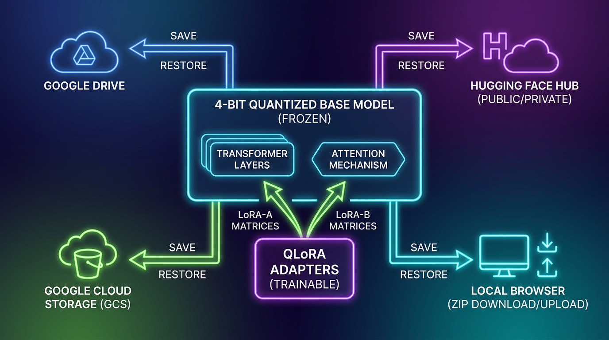

The Gemma 4 Fine-Tuning & Inference Encyclopaedia

Why this book exists
Let's skip the marketing slides and AI hype. In practical, boots-on-the-ground engineering, running open-weights LLMs like Google's Gemma 4 (Edge 2B / 4B) locally or on serverless infrastructure requires navigating a minefield of memory bottlenecks, precision mismatches, and fragile software integrations.
Whether you are trying to squeeze training passes onto a single free-tier 15GB VRAM T4 GPU on Colab, or scaling sub-second latency endpoints on serverless container clouds like GCP Cloud Run, this book is designed to make you an immediate expert. It compiles the rigorous theoretical foundations of model runtimes and quantisation formats, matches them with copy-pasteable implementations across major libraries, and consolidates the real-world, battle-tested solutions we engineered during our active development cycles.
Beginner's Core Concept Primer
Before diving into the low-level optimizations and architectural schematics of Gemma 4, it is essential to ground our analysis in the fundamental concepts governing modern deep learning runtimes. Below, we define and mathematically contextualize the core building blocks of large language model training and deployment:
1. Video Random Access Memory (VRAM)
Definition: The high-speed memory residing directly on hardware accelerators (GPUs or TPUs). VRAM represents the ultimate constraint in LLM engineering. When training or serving models, VRAM is dynamically divided into several distinct pools:
- Static Weights: Memory occupied by the model parameters themselves (e.g., a 4B parameter model in FP16 precision requires $4 \times 10^9 \times 2 \text{ bytes} = 8 \text{ GB}$ of static VRAM).
- Optimizer States: Memory required during training (e.g., AdamW requires 8 bytes per parameter to store first and second momentum vectors).
- Gradients: Crucial for weight updates, matching the weight dimension (typically 4 bytes per parameter in FP32).
- Activation Memory: Intermediate layer activations stored during the forward pass to compute gradients during the backward pass.
- KV Cache: Active context storage during inference to accelerate generation.
2. Supervised Fine-Tuning (SFT)
Definition: SFT is the process of adjusting a pre-trained model's parameters on a curated dataset of instruction-response pairs. SFT uses standard cross-entropy loss computed exclusively over the target (response) tokens, masking out the prompt tokens. The loss function is formulated as:
Where $x$ is the input instruction, $y$ is the ground-truth target sequence of length $N$, and $P(y_i \mid \cdot)$ is the probability of the token predicted by the model's language modeling head.
3. Gradient Checkpointing (Activation Checkpointing)
Definition: A training technique that exchanges computational cycles for memory savings. During a standard training forward pass, PyTorch stores every intermediate activation tensor across all $L$ layers to compute the gradient chain rule during the backward pass. This causes activation memory to scale linearly $O(L)$ with model depth and sequence length.
Mechanism: Gradient checkpointing only saves activations at a subset of layers (e.g., the boundaries of transformer blocks). When backpropagating through un-checkpointed blocks, the GPU re-executes the forward pass on-the-fly for that specific block. This reduces activation VRAM to $O(\sqrt{L})$ at the cost of approximately 30% additional compute overhead.
4. Key-Value (KV) Cache
Definition: An inference-time optimization designed to eliminate quadratic compute overhead. In a decoder-only transformer, generating a token at step $t$ requires computing attention over all $t-1$ historical tokens. Since historical keys ($K$) and values ($V$) do not change, recalculating them at every autoregressive step is redundant.
Mechanism: The KV Cache stores the computed $K$ and $V$ matrices of historical tokens in VRAM. At each step, only the query vector ($Q_t$) for the single newly generated token is projected, and then multiplied directly with the cached historical key and value tensors, reducing the decoding computational complexity from $O(s^2)$ to $O(s)$ where $s$ is the active context length.
5. The Basic Memory Bottleneck in Transformer Decoding
Definition: The fundamental performance limitation of LLM generation. While model training is **compute-bound** (leveraging massive matrix-matrix multiplications that run at maximum FLOPS on tensor cores), autoregressive decoding is strictly **memory-bandwidth bound**.
Mechanism: To generate a single token, the GPU must fetch the entire weight matrix $W$ and the active KV cache from its high-bandwidth off-chip memory (HBM) into its on-chip SRAM registers to perform a single matrix-vector multiplication. The Arithmetic Intensity is extremely low:
Because modern GPUs process floating-point math orders of magnitude faster than they can read bytes from physical RAM, the tensor cores spend up to 99% of their cycles idle, waiting for weights to load. The speed of inference is thus directly governed by the memory-transfer rate, making weight quantization (e.g., compressing 16-bit weights to 4-bit) the primary mechanism for accelerating serving speeds.
Encyclopaedia Structure
This comprehensive technical resource is organized into nine specialized chapters, mapping the lifecycle of model serving, compression, training, and evaluation:
- Chapter 1: Agentic Dataset Prep: How to coordinate the Google Antigravity (AGY) Producer Archetype to synthesize high-quality JSON schemas.
- Chapter 2: Fine-Tuning & PEFT: Low-level adapters, including the mathematics of DoRA and validated training recipes.
- Chapter 3: Quantisation Formats & Mechanics: The mathematics of affine quantisation and the binary layout of GGUF.
- Chapter 4: Mainstream Model Runtimes & Inference Engines: A deep comparison of vLLM, Hugging Face, Apple MLX, Google LiteRT, and llama.cpp.
- Chapter 5: Robust Evaluation: Rigorous methodologies including programmatic string metrics, safety classifiers, and LLM-as-a-Judge.
- Chapter 6: Advanced Deep Learning Optimization: Cutting-edge model compression and serving topics including Speculative Decoding, Teacher-Student Distillation, Quantization-Aware Training (QAT), Structured/Unstructured Pruning, and multi-node Kubernetes GKE pipelines.
- Chapter 7: Our Pipeline Lessons: Architecture diagrams and lessons learned during Cloud Run serverless container deployments.
- Chapter 8: Project Run Guide: Direct terminal orchestration guides for compiling pipelines, generating data, and deploying servers.
- Chapter 9: Notebook Code Companion Guide: A granular, line-by-line and parameter-by-parameter analysis of our complete Colab fine-tuning and evaluation notebook, explaining exact variable values, available configuration options, and customization strategies.
Agentic Dataset Synthesis & Multimodal Architectures
Multimodal Vision-Language Architecture (Gemma Vision)
Gemma Vision models (such as Gemma 2 2B-V and Gemma 2 9B-V) extend Google’s causal language model architecture with advanced visual comprehension capabilities. Instead of treating input purely as text-only causal tokens, these models ingest interleaved text and visual inputs dynamically, aligning them in a shared semantic latent space.
1. Vision Encoder: SigLIP
The visual frontend of the model is powered by **SigLIP (Sigmoid Language-Image Pre-training)**, typically using a Vision Transformer (ViT) variant such as siglip-so400m-patch14-384.
- Sigmoid Loss: Unlike standard CLIP which uses a softmax loss across an entire batch (coupling all examples together and requiring massive batch sizes for stabilization), SigLIP employs a pairwise sigmoid loss. This treats the image-text matching task as a collection of independent binary classification tasks, stabilizing training and scaling efficiently to arbitrary batch sizes.
- Visual Tokenization: A raw image of size \(H \times W\) is split into a grid of non-overlapping patches of size \(P \times P\) (where \(P = 14\) is the patch size). For a standard input resolution of \(384 \times 384\) pixels: $$N_{\text{patches}} = \left( \frac{H}{P} \right) \times \left( \frac{W}{P} \right) = \left( \frac{384}{14} \right) \times \left( \frac{384}{14} \right) \approx 27.4 \times 27.4 \implies 729 \text{ tokens}$$ These 729 visual tokens are processed by the ViT to output 729 patch embeddings, each of dimension \(d_{\text{vision}} = 1152\) (for the SO400m backbones).
2. Visual Patch Projection Layers
The visual patch embeddings cannot be fed directly into the language model because their dimensionality (\(d_{\text{vision}}\)) does not match the LLM's hidden layer dimension (\(d_{\text{LLM}}\), which is \(2048\) for Gemma 2 2B or \(3584\) for Gemma 2 9B). To align the visual tokens with the textual embedding space, a Multimodal Projector is used. In Gemma 2 Vision, this is implemented as a 2-layer Multi-Layer Perceptron (MLP) with SwiGLU or GELU activation:
- \(H_{\text{vision}} \in \mathbb{R}^{729 \times d_{\text{vision}}}\) is the matrix of raw vision patch embeddings.
- \(W_1 \in \mathbb{R}^{d_{\text{vision}} \times d_{\text{proj}}}\) and \(W_2 \in \mathbb{R}^{d_{\text{proj}} \times d_{\text{LLM}}}\) are learnable projection matrices (often \(d_{\text{proj}} = 4 \times d_{\text{LLM}}\)).
- \(\text{Act}\) is the activation function (e.g., GELU).
- \(X_{\text{projected}} \in \mathbb{R}^{729 \times d_{\text{LLM}}}\) is the final sequence of visual patch embeddings aligned with the text latent space.
3. Interleaved Text and Image Representation
Visual tokens are interleaved with text tokens dynamically in the input sequence. Special boundary tokens are wrapped around visual sequences to let the causal decoder recognize sensory boundaries:
In adaptive-resolution variants (such as processing high-resolution images), the model splits a large image (e.g., \(896 \times 896\)) into multiple \(384 \times 384\) tiles plus a downscaled global thumbnail. Each tile is processed independently by SigLIP, projected, and interleaved with custom row/column delimiter tokens:
For a 4-tile high-resolution image, this results in over \(3,645\) visual tokens, requiring substantial KV cache capacity and VRAM allocations during serving.
Agentic Dataset Synthesis with Google Antigravity (AGY)
For high-fidelity training data that captures nuanced human communication styles, static templates fall short. Google Antigravity (AGY) offers a powerful alternative: using autonomous agents acting as a Producer Archetype to generate highly varied, schema-compliant, and diverse datasets.
- Antigravity CLI: Run
agyin your terminal. - Antigravity 2.0 (UI): Launch the Desktop Client and open your project folder to grant workspace access.
Four Enterprise Dataset Synthesis Prompts
These four prompts can be copied and pasted directly into AGY to generate high-value, production-grade custom datasets:
Fine-Tuning & Parameter-Efficient Fine-Tuning (PEFT)
Full parameter fine-tuning is computationally prohibitive. Backpropagation requires caching gradient activation graphs--allocating up to 4x the model's static weight memory during backward passes. PEFT methods bypass this restriction by freezing the base model and training tiny, low-rank matrices.
LoRA: Low-Rank Adaptation
LoRA parameterises weight updates \(\Delta W\) by decomposing them into two low-rank matrices \(A\) and \(B\). For a target layer weight \(W_0 \in \mathbb{R}^{d \times k}\), we formulate the update:
At rank \(r=16\), trainable parameter counts shrink by **99.9%** (e.g. from 4GB down to 15MB), drastically containing VRAM footprint during optimizer execution.
Advanced PEFT Variants & Deep-Dives
While standard LoRA provides significant memory savings, production requirements demand even greater efficiency or stability. Below, we explore the deep mathematical and empirical frameworks of QLoRA and Weight-Decomposed Low-Rank Adaptation (DoRA):
1. QLoRA: Quantised Low-Rank Adaptation
QLoRA reduces the memory footprint of fine-tuning by quantising the frozen base model's weights to a high-density 4-bit NormalFloat (NF4) format, while keeping the low-rank adapters in 16-bit bfloat16. To stabilize backpropagation, QLoRA introduces three key innovations:
- NF4 (NormalFloat4) Base Dtype: An information-theoretically optimal quantisation scheme custom-tailored for normally-distributed model weights. It partitions standard normal curves into 16 discrete levels of equal probability, avoiding uniform quantization noise.
- Double Quantisation (DQ): Quantises the local block scale factors \(S\) themselves from 32-bit float to 8-bit, saving an additional 0.37 GB of VRAM for an 7B model.
- Paged Optimizers: Automatically spills active optimizer states (e.g., AdamW momentum buffers) to system CPU memory during peak gradient updates on long sequences, eliminating sudden Out-Of-Memory (OOM) crashes.
2. DoRA: Weight-Decomposed Low-Rank Adaptation
DoRA mathematically decouples magnitude scaling from directional updates during training, mimicking the learning capacity of full parameter fine-tuning. While standard LoRA updates couple both components within a low-rank bottleneck—making it harder for the model to learn optimal weight orientations—DoRA restricts directional updates strictly to the tangent space of the unit sphere.
Any pretrained weight matrix \(W_0 \in \mathbb{R}^{d \times k}\) can be decomposed into a magnitude vector \(m_0 \in \mathbb{R}^{1 \times k}\) (the Euclidean norm of each column) and a directional matrix \(V_0 \in \mathbb{R}^{d \times k}\):
- \(m \in \mathbb{R}^{1 \times k}\) is a directly learnable magnitude vector initialized as \(m_{0, j} = \|W_{0, :, j}\|_2\).
- \(V_0 \in \mathbb{R}^{d \times k}\) is the initial direction matrix (equal to \(W_0\)).
- \(\|\cdot\|_c\) denotes the column-wise vector norm operator, scaling columns by their Euclidean norm.
- \(B \in \mathbb{R}^{d \times r}\) and \(A \in \mathbb{R}^{r \times k}\) are the standard learnable low-rank adapter matrices (\(r \ll \min(d, k)\)).
During backpropagation, the column-wise normalization operator projects gradients orthogonally, isolating direction changes to the adapters \(B\) and \(A\) and leaving magnitude changes to be optimized directly by \(m\). This improves convergence on complex instruction-following tasks.
3. GaLore (Gradient Low-Rank Projection)
Instead of restricting parameter updates directly, GaLore projects the weight gradients \(\nabla_W \mathcal{L}\) into low-rank representations during optimizer steps, slashing optimizer memory consumption by 65% while training all parameters.
Standardised Hyperparameter Reference for Gemma 4
To achieve high-quality results when fine-tuning Gemma 4 models on custom instructions or downstream tasks, training configurations must be carefully tuned. The table below outlines production-validated hyperparameters comparing standard LoRA and QLoRA configurations.
| Hyperparameter | Standard LoRA (BF16 Base) | QLoRA (NF4 4-bit Base) | Empirical Technical Rationale |
|---|---|---|---|
| Target Modules | q_proj, k_proj, v_proj, o_proj, gate_proj, up_proj, down_proj |
q_proj, k_proj, v_proj, o_proj, gate_proj, up_proj, down_proj |
Adapting all linear projection layers is crucial; restricting adapters solely to attention heads degrades model calibration and downstream reasoning performance. |
| Adapter Rank (\(r\)) | 16 or 32 |
32 or 64 |
QLoRA requires a higher rank to compensate for the quantization errors present in the frozen 4-bit base model weights. |
| LoRA Alpha (\(\alpha\)) | 32 |
128 (typically \(2 \times r\) or \(4 \times r\)) |
Scaling coefficient. Setting \(\alpha = 2 \times r\) scales the adapter weight updates relative to the initial pretrained weights to stabilize training. |
| Base Weight Dtype | bfloat16 (16-bit) |
nf4 (4-bit NormalFloat) |
BF16 provides maximum accuracy; NF4 (NormalFloat4) provides high-density 4-bit compression designed for normal distributions. |
| Compute Dtype | bfloat16 |
bfloat16 |
Compute dtype must be 16-bit to avoid numerical underflow during the adapter forward/backward passes. |
| Learning Rate | \(1\text{e}-4 \text{ to } 2\text{e}-4\) | \(2\text{e}-4 \text{ to } 3\text{e}-4\) | QLoRA requires a slightly higher learning rate to aggressively steer the model parameters given the rigid, quantized base weights. |
| Optimizer | adamw_torch (or adamw_8bit) |
paged_adamw_8bit |
QLoRA requires paged optimizers to dynamically spill active optimizer states to system RAM, preventing OOM spikes during peak gradient evaluations. |
| LR Scheduler | Cosine Decay with Warmup | Cosine Decay with Warmup | Prevents catastrophic forgetting during initial steps and converges smoothly as learning rate decays to \(1\text{e}-5\). |
| Warmup Ratio | 0.03 |
0.05 |
Gradually scales learning rate to prevent initial high-gradient updates from destabilizing adapter initialization. |
| Effective Batch Size | 64 or 128 |
64 or 128 |
Achieved via Gradient Accumulation Steps. High effective batch sizes reduce gradient variance, ensuring stable convergence. |
| Weight Decay | 0.01 |
0.01 |
Applies minor L2 regularization directly on the learnable adapter matrices to prevent overfitting on small task datasets. |
| Gradient Clipping | 1.0 |
1.0 |
Caps the global norm of the gradient vector to \(1.0\) to prevent gradient explosion on long sequences or outlier batches. |
| Sequence Packing | Enabled |
Enabled |
Packs multiple short dialogue examples into a single sequence length (e.g. 4096) to maximize GPU packing density and accelerate training. |
Framework Integration Snippets
Implementing PEFT requires choosing the right software harness. Here are native code architectures for mainstream libraries:
from peft import LoraConfig, get_peft_model
from transformers import AutoModelForCausalLM
peft_config = LoraConfig(
r=16,
lora_alpha=32,
target_modules=["q_proj", "v_proj", "k_proj", "o_proj"],
lora_dropout=0.05,
bias="none",
task_type="CAUSAL_LM"
)
# Apply adaptor wrap to any base model
model = AutoModelForCausalLM.from_pretrained("google/gemma-4-e2b-it", device_map="auto")
model = get_peft_model(model, peft_config)
model.print_trainable_parameters()import flax.linen as nn
import jax.numpy as jnp
class FlaxLoRADense(nn.Module):
features: int
rank: int
alpha: float
@nn.compact
def __call__(self, x):
# Frozen base weight matrix
w_frozen = self.param('w_frozen', nn.initializers.glorot_uniform(), (x.shape[-1], self.features))
# Active trainable LoRA projection components
lora_A = self.param('lora_A', nn.initializers.normal(stddev=1.0/self.rank), (x.shape[-1], self.rank))
lora_B = self.param('lora_B', nn.initializers.zeros, (self.rank, self.features))
# Freezing mechanism handled via JAX optimizer filter maps
base_out = jnp.dot(x, w_frozen)
lora_out = jnp.dot(jnp.dot(x, lora_A), lora_B) * (self.alpha / self.rank)
return base_out + lora_outMulti-GPU Distributed Scaling
Mixed-precision training with the AdamW optimizer is the standard for training modern large language models like Gemma 4. In a standard mixed-precision training run, model memory allocation consists of several distinct states:
- Model Parameters (Weights): Stored in 16-bit float (FP16 or BF16) requiring \(2\Psi\) bytes, where \(\Psi\) represents the model parameter count.
- Gradients: Stored in 16-bit float (FP16 or BF16) requiring \(2\Psi\) bytes.
- Optimizer States: Maintained in 32-bit float (FP32) to prevent numerical instability. The AdamW optimizer tracks three primary FP32 tensors per parameter:
- Master Weights Copy: A high-precision copy of the parameters used to apply tiny gradient steps, requiring \(4\Psi\) bytes.
- Momentum (First-order moment vector, \(m_t\)): Tracks moving averages of the gradients, requiring \(4\Psi\) bytes.
- Variance (Second-order moment vector, \(v_t\)): Tracks moving averages of squared gradients, requiring \(4\Psi\) bytes.
This explains the exact multiplier of \(12\Psi\) bytes for FP32 states in AdamW (\(4\Psi + 4\Psi + 4\Psi = 12\Psi\) bytes). Together, the baseline VRAM memory allocated to model states (independent of activations, workspace, and KV cache) under a non-sharded mixed-precision data-parallel framework is:
DeepSpeed's Zero Redundancy Optimizer (ZeRO) eliminates this duplication by sharding these states across the data-parallel world of size \(N_d\) (the number of GPUs).
ZeRO Memory Layout comparison (Memory states per GPU)
- Weights: 2\(\Psi\) (Replicated)
- Gradients: 2\(\Psi\) (Replicated)
- AdamW States: 12\(\Psi\) (Replicated)
- Weights: 2\(\Psi\) (Replicated)
- Gradients: 2\(\Psi\) (Replicated)
- AdamW States: 12\(\Psi\)/\(N_d\) (Sharded)
- Weights: 2\(\Psi\) (Replicated)
- Gradients: 2\(\Psi\)/\(N_d\) (Sharded)
- AdamW States: 12\(\Psi\)/\(N_d\) (Sharded)
- Weights: 2\(\Psi\)/\(N_d\) (Sharded)
- Gradients: 2\(\Psi\)/\(N_d\) (Sharded)
- AdamW States: 12\(\Psi\)/\(N_d\) (Sharded)
Non-Sharded: [Weights (2Ψ)] [Gradients (2Ψ)] [AdamW (12Ψ)] ----------> 16Ψ / GPU (Replicated)
ZeRO-1: [Weights (2Ψ)] [Gradients (2Ψ)] [AdamW (12Ψ / Nd)] ------> 4Ψ + 12Ψ/Nd (AdamW Sharded)
ZeRO-2: [Weights (2Ψ)] [Gradients (2Ψ/Nd)] [AdamW (12Ψ/Nd)] ----> 2Ψ + 14Ψ/Nd (Grads + AdamW Sharded)
ZeRO-3: [Weights (2Ψ/Nd)] [Gradients (2Ψ/Nd)] [AdamW (12Ψ/Nd)] --> 16Ψ/Nd (All states Sharded)ZeRO-1: Optimizer State Sharding
In ZeRO-1, only the optimizer states are sharded across the \(N_d\) processes. Parameters and gradients remain replicated on each device. Each GPU updates only its designated shard of the optimizer states and applies updates to its slice of the master weights, which are then broadcasted back.
Scaling Behavior: As \(N_d \to \infty\), the state memory asymptotically approaches \(4\Psi\) bytes (the weight and gradient replication baseline).
ZeRO-2: Gradient Sharding
In ZeRO-2, both the optimizer states and gradients are sharded across the \(N_d\) processes. During the backward pass, gradients are reduced and sharded immediately as they are computed layer-by-layer (via reduce-scatter), meaning a single GPU only retains the gradient shard (\(\frac{2\Psi}{N_d}\) bytes) associated with its portion of the optimizer states.
Scaling Behavior: As \(N_d \to \infty\), state memory approaches \(2\Psi\) bytes (the replicated weight baseline).
ZeRO-3: Parameter Sharding
In ZeRO-3, all three components (weights, gradients, and optimizer states) are sharded across the \(N_d\) processes. During the forward pass, layer weights are gathered (via all-gather) dynamically, computed, and immediately discarded. During the backward pass, weights are gathered again to compute activation gradients, and computed gradients are immediately reduced and partitioned.
where \(V_{\text{buffer}}\) represents the temporary storage for gathered parameters and gradients of the largest active layer during computation:
Since \(\Psi_{\text{layer}} \ll \Psi\), ZeRO-3 scales memory down linearly with \(N_d\), enabling models of arbitrary sizes to be trained on large clusters.
DeepSpeed Production Configurations
📘 View DeepSpeed ZeRO-2 Production Configuration (ds_config_zero2.json)
Ideal when the model fits within the aggregate memory of the GPU cluster but optimizer states cause single-GPU OOMs. Includes CPU offloading for optimizer states.
{
"train_batch_size": "auto",
"train_micro_batch_size_per_gpu": "auto",
"gradient_accumulation_steps": "auto",
"zero_optimization": {
"stage": 2,
"offload_optimizer": {
"device": "cpu",
"pin_memory": true,
"buffer_count": 4,
"fast_init": false
},
"allgather_partitions": true,
"allgather_bucket_size": 2e8,
"overlap_comm": true,
"reduce_scatter": true,
"reduce_bucket_size": 2e8,
"contiguous_gradients": true
},
"bf16": {
"enabled": true
},
"gradient_clipping": "auto",
"steps_per_print": 100,
"wall_clock_breakdown": false
}📕 View DeepSpeed ZeRO-3 Production Configuration (ds_config_zero3.json)
Tailored for models exceeding single-GPU memory capacity. Shards parameters, gradients, and optimizer states, offloads both weights and optimizer states to CPU/system memory, and configures aggressive communication overlapping.
{
"train_batch_size": "auto",
"train_micro_batch_size_per_gpu": "auto",
"gradient_accumulation_steps": "auto",
"zero_optimization": {
"stage": 3,
"offload_optimizer": {
"device": "cpu",
"pin_memory": true,
"buffer_count": 4,
"fast_init": false
},
"offload_param": {
"device": "cpu",
"pin_memory": true,
"buffer_count": 5,
"max_in_cpu": 1e9,
"fast_init": true
},
"allgather_partitions": true,
"allgather_bucket_size": 5e7,
"overlap_comm": true,
"reduce_scatter": true,
"reduce_bucket_size": 5e7,
"contiguous_gradients": true,
"stage3_max_live_parameters": 1e9,
"stage3_max_reuse_distance": 1e9,
"stage3_prefetch_bucket_size": 5e7,
"stage3_param_persistence_threshold": 1e5,
"stage3_gather_16bit_weights_on_model_save": true
},
"bf16": {
"enabled": true
},
"gradient_clipping": "auto",
"steps_per_print": 100,
"wall_clock_breakdown": false
}PyTorch FSDP (Fully Sharded Data Parallel) Mechanics
PyTorch FSDP acts as an alternative to DeepSpeed ZeRO-3 by breaking parameters, gradients, and optimizer states across data-parallel ranks.
FSDP State Dict Types: Sharded vs. Consolidated Checkpoints
When running multi-GPU distributed training under FSDP, saving the checkpoint naively using a consolidated state dict triggers major memory bottlenecks:
StateDictType.FULL_STATE_DICT(Consolidated Checkpoints):- Mechanism: Every worker rank sends its local sharded parameters to Rank 0 (the master rank). Rank 0 gathers these shards in host (CPU) memory, fits them together into a complete model state dictionary, and serializes it to disk as a single
.ptfile. - Bottleneck: This requires Rank 0 to have enough host memory to hold the entire un-sharded model weights (plus the communication overhead of the gather). For ultra-large models (e.g. Gemma 4 27B), compiling the full model on Rank 0 causes an instant system Out-Of-Memory (OOM) crash on both Rank 0's CPU and GPU.
- Mechanism: Every worker rank sends its local sharded parameters to Rank 0 (the master rank). Rank 0 gathers these shards in host (CPU) memory, fits them together into a complete model state dictionary, and serializes it to disk as a single
StateDictType.SHARDED_STATE_DICT(Distributed Saving):- Mechanism: Each process saves its local slice of the model parameters directly to a shared file system (like an NFS, Lustre, or local disk mounts) in parallel. FSDP leverages PyTorch's distributed checkpointing API (
torch.distributed.checkpointordist_cp) to write metadata alongside a directory of multiple partitioned tensor files. - Benefits: Extremely scalable. It features a \(O(1)\) memory overhead with respect to cluster scaling, bypasses the bottlenecks on Rank 0, and writes checkpoints at peak disk write bandwidth speeds because all nodes write concurrently.
- Mechanism: Each process saves its local slice of the model parameters directly to a shared file system (like an NFS, Lustre, or local disk mounts) in parallel. FSDP leverages PyTorch's distributed checkpointing API (
import os
import torch
import torch.nn as nn
import torch.distributed as dist
import torch.distributed.checkpoint as dist_cp
from torch.distributed.fsdp import FullyShardedDataParallel as FSDP
from torch.distributed.fsdp import StateDictType, ShardedStateDictConfig
def setup_distributed():
"""Initializes the PyTorch distributed environment."""
dist.init_process_group(backend="nccl")
local_rank = int(os.environ["LOCAL_RANK"])
torch.cuda.set_device(local_rank)
return local_rank
def cleanup_distributed():
"""Cleans up the distributed process group."""
dist.destroy_process_group()
class SimpleGemmaBlock(nn.Module):
"""A mock representation of a Gemma layer block."""
def __init__(self, dim: int = 4096):
super().__init__()
self.ln1 = nn.LayerNorm(dim)
self.qkv = nn.Linear(dim, dim * 3, bias=False)
self.out_proj = nn.Linear(dim, dim, bias=False)
self.ln2 = nn.LayerNorm(dim)
self.mlp = nn.Sequential(
nn.Linear(dim, dim * 4, bias=False),
nn.GELU(),
nn.Linear(dim * 4, dim, bias=False)
)
def forward(self, x: torch.Tensor) -> torch.Tensor:
h = x + self.out_proj(self.qkv(self.ln1(x)).chunk(3, dim=-1)[0])
return h + self.mlp(self.ln2(h))
def save_fsdp_sharded_checkpoint(model: FSDP, checkpoint_dir: str):
"""
Saves an FSDP model using StateDictType.SHARDED_STATE_DICT.
Each GPU rank writes its own shard to disk concurrently.
"""
os.makedirs(checkpoint_dir, exist_ok=True)
# Configure FSDP to return sharded state dictionaries
sharded_config = ShardedStateDictConfig(offload_to_cpu=True)
with FSDP.state_dict_type(model, StateDictType.SHARDED_STATE_DICT, sharded_config):
state_dict = model.state_dict()
# Write the sharded state dict to disk using PyTorch distributed checkpointing
dist_cp.save(
state_dict=state_dict,
storage_writer=dist_cp.FileSystemWriter(checkpoint_dir)
)
if dist.get_rank() == 0:
print(f"[SUCCESS] Sharded checkpoint successfully saved to: {checkpoint_dir}")
def load_fsdp_sharded_checkpoint(model: FSDP, checkpoint_dir: str):
"""
Loads an FSDP model checkpoint saved with StateDictType.SHARDED_STATE_DICT.
Parameters are distributed in parallel across ranks.
"""
# Configure FSDP state dict type to SHARDED_STATE_DICT to align with the loader
sharded_config = ShardedStateDictConfig(offload_to_cpu=True)
with FSDP.state_dict_type(model, StateDictType.SHARDED_STATE_DICT, sharded_config):
state_dict = model.state_dict()
# In-place loading directly into the distributed shards
dist_cp.load(
state_dict=state_dict,
storage_reader=dist_cp.FileSystemReader(checkpoint_dir)
)
# Load the updated state dict back into FSDP
model.load_state_dict(state_dict)
if dist.get_rank() == 0:
print(f"[SUCCESS] Sharded checkpoint successfully loaded from: {checkpoint_dir}")
# Operational Demo
if __name__ == "__main__":
# Ensure this script is run via: torchrun --nproc_per_node=X script.py
try:
rank = setup_distributed()
# Instantiate a raw module
raw_model = SimpleGemmaBlock(dim=2048).cuda(rank)
# Wrap module in FSDP sharding
fsdp_model = FSDP(raw_model)
# Define checkpoint directory
ckpt_path = "./fsdp_sharded_gemma_checkpoint"
# Save distributed checkpoint
save_fsdp_sharded_checkpoint(fsdp_model, ckpt_path)
# Synchronize barrier
dist.barrier()
# Load distributed checkpoint
load_fsdp_sharded_checkpoint(fsdp_model, ckpt_path)
except KeyError:
print("[ERROR] Please execute this script within a torchrun / distributed shell.")
finally:
if dist.is_initialized():
cleanup_distributed()TPU/JAX Google Hardware Scaling
JAX implements multi-host distributed scaling using Single Program, Multiple Data (SPMD) paradigms. Rather than relying on explicit communication calls (like all_reduce), JAX relies on compile-time arrays sharding specifications mapped over logical hardware layouts.
Hardware Topology Mapping with Mesh
Physical TPU environments are connected via high-speed, multi-dimensional Torus interconnects (ICI). JAX maps these physical devices into a logical, multi-dimensional grid called a Mesh.
import jax
from jax.sharding import Mesh
from jax.sharding import PartitionSpec as P
# Get available physical devices (e.g., 8 TPU cores on a v4-8)
devices = jax.devices()
# Define a 2D Logical Mesh: 4-way Data Parallel (DP) and 2-way Tensor Parallel (TP)
mesh = Mesh(devices.reshape(4, 2), axis_names=('data_parallel', 'tensor_parallel'))Axis Mapping via PartitionSpec
To shard a multidimensional array (tensor) across the logical Mesh, JAX uses a PartitionSpec (abbreviated as P). Each axis of the array is mapped to a named axis of the Mesh:
P('data_parallel', 'tensor_parallel'): Shards the 1st axis of the array acrossdata_paralleland the 2nd axis acrosstensor_parallel.P('data_parallel', None): Shards the 1st axis acrossdata_paralleland leaves the 2nd axis un-sharded (replicated).P(None, None): Replicates the entire tensor across all devices.
Enforcing Execution with NamedSharding
A NamedSharding object binds the logical Mesh and the PartitionSpec together:
from jax.sharding import NamedSharding
weight_spec = P(None, 'tensor_parallel')
weight_sharding = NamedSharding(mesh, weight_spec)
# Any JAX Array created with or bound to weight_sharding will be physically split
# along its column dimension across TPU cores mapped to 'tensor_parallel'.Distributed JAX Training Step for Gemma
This implementation writes a complete SPMD distributed training step for Gemma. It uses JAX's modern functional layout APIs (jax.jit compiled with input/output NamedSharding objects) to trigger automatic compiler-driven multi-host TPU communication.
import jax
import jax.numpy as jnp
import optax
from jax.sharding import Mesh, NamedSharding, PartitionSpec as P
from typing import NamedTuple, Tuple
# 1. Define Model State & Dummy Gemma Layer
class TrainState(NamedTuple):
params: dict
opt_state: optax.OptState
step: jax.Array
def init_dummy_gemma_params(rng, d_model=2048) -> dict:
k1, k2 = jax.random.split(rng)
# MLP projection matrices
return {
"wi": jax.random.normal(k1, (d_model, d_model * 4)) * 0.02,
"wo": jax.random.normal(k2, (d_model * 4, d_model)) * 0.02,
}
def gemma_mlp_forward(params: dict, x: jax.Array) -> jax.Array:
"""Standard swiglu-like forward pass helper."""
h = jnp.matmul(x, params["wi"])
h = jax.nn.gelu(h)
return jnp.matmul(h, params["wo"])
# 2. Define SPMD Distributed Step Function
def train_step(state: TrainState, batch: dict) -> Tuple[TrainState, jax.Array]:
"""Computes grads and updates model state in a functional JAX manner."""
inputs, targets = batch["inputs"], batch["targets"]
def loss_fn(params):
predictions = gemma_mlp_forward(params, inputs)
loss = jnp.mean((predictions - targets) ** 2)
return loss
loss, grads = jax.value_and_grad(loss_fn)(state.params)
# Construct optax SGD optimizer step
tx = optax.sgd(learning_rate=1e-3)
updates, new_opt_state = tx.update(grads, state.opt_state, state.params)
new_params = optax.apply_updates(state.params, updates)
new_state = TrainState(
params=new_params,
opt_state=new_opt_state,
step=state.step + 1
)
return new_state, loss
# 3. Distributed Setup and JIT Compiler Compilation
def run_distributed_training():
# Setup Logical Mesh
devices = jax.devices()
num_devices = len(devices)
# Assume 1D layout for simplicity: DP across all devices
mesh = Mesh(devices, axis_names=('data_parallel',))
# Define Sharding Specs
dp_sharding = NamedSharding(mesh, P('data_parallel', None))
replicated_sharding = NamedSharding(mesh, P(None, None))
param_sharding = NamedSharding(mesh, P(None, None)) # Params replicated for standard DP
# Build TrainState
rng = jax.random.PRNGKey(42)
params = init_dummy_gemma_params(rng)
tx = optax.sgd(learning_rate=1e-3)
opt_state = tx.init(params)
state = TrainState(
params=params,
opt_state=opt_state,
step=jnp.array(0, dtype=jnp.int32)
)
# Compile step utilizing jax.jit with precise in_shardings & out_shardings rules
compiled_train_step = jax.jit(
train_step,
in_shardings=(
# TrainState Sharding
TrainState(
params=param_sharding, # Replicated parameters
opt_state=replicated_sharding, # Replicated optimizer state
step=replicated_sharding # Replicated step count
),
# Batch Sharding (Data Parallel)
{
"inputs": dp_sharding, # inputs split along batch dimension
"targets": dp_sharding # targets split along batch dimension
}
),
out_shardings=(
# Return State Sharding
TrainState(
params=param_sharding,
opt_state=replicated_sharding,
step=replicated_sharding
),
# Return Loss Sharding (Scalar, Replicated)
replicated_sharding
)
)
# Create Dummy Batch
x_data = jnp.ones((num_devices * 4, 2048)) # Fits standard DP division
y_data = jnp.ones((num_devices * 4, 2048))
batch = {"inputs": x_data, "targets": y_data}
# Execute JIT training step
state, loss = compiled_train_step(state, batch)
print(f"[SUCCESS] Distributed training iteration completed. Loss: {loss}")
if __name__ == "__main__":
run_distributed_training()EasyLM Configuration Setups for JAX TPU Training
EasyLM (UC Berkeley) implements robust configurations using standard ml_collections parameter objects. Below is a production-grade, highly-detailed implementation configuration capturing actual multi-node TPU and data-parallel sharding specifications for the Gemma model.
from ml_collections import ConfigDict
def get_gemma_easylm_config() -> ConfigDict:
"""Returns a highly-optimized EasyLM JAX TPU configuration for Gemma training."""
config = ConfigDict()
# 1. Distributed Mesh Sharding Setup
# "dp=-1,fq=1,mp=1" tells EasyLM to partition the devices such that:
# - Model/Tensor Parallelism (mp) = 1 (replicated)
# - Fully Sharded Data Parallel / ZeRO-3 (fq) = 1 (replicated)
# - Data Parallelism (dp) = -1 (occupies all remaining physical hardware devices)
config.mesh_dim = "dp=-1,fq=1,mp=1"
# 2. Model Architecture Definitions (Gemma-specific hyperparameters)
config.model = ConfigDict()
config.model.model_type = "gemma"
config.model.vocab_size = 256000
config.model.hidden_size = 2048
config.model.intermediate_size = 16384 # GQA / SwiGLU expansion scale
config.model.num_hidden_layers = 18
config.model.num_attention_heads = 8
config.model.num_key_value_heads = 1 # Grouped-Query Attention (GQA) config
config.model.head_dim = 256
config.model.max_sequence_length = 8192
config.model.rms_norm_eps = 1e-6
config.model.initializer_range = 0.02
config.model.use_cache = False
# 3. Optimizer Configuration (AdamW with Warmup Cosine Decays)
config.optimizer = ConfigDict()
config.optimizer.type = "adamw"
config.optimizer.adamw = ConfigDict()
config.optimizer.adamw.weight_decay = 0.01
config.optimizer.adamw.beta1 = 0.9
config.optimizer.adamw.beta2 = 0.95
config.optimizer.adamw.eps = 1e-8
# Learning rate scheduler parameters
config.optimizer.lr = 1e-4
config.optimizer.lr_warmup_steps = 1000
config.optimizer.lr_decay_steps = 50000
config.optimizer.lr_min = 1e-5
# 4. Dataset Loading and Execution Settings
config.dataset = ConfigDict()
config.dataset.type = "huggingface"
config.dataset.text_processor = ConfigDict()
config.dataset.text_processor.dataset_name = "argilla/ultrafeedback-binarized-preferences-cleaned"
config.dataset.text_processor.dataset_split = "train"
config.dataset.text_processor.tokenizer_name = "google/gemma-2b"
config.dataset.text_processor.max_len = 8192
config.dataset.text_processor.batch_size = 64 # Global batch size distributed across TPU hosts
# 5. Checkpointing Parameters
config.save_checkpoint_freq = 500
config.checkpoint_dir = "gs://gemma-tpu-training-bucket/checkpoints/"
config.load_checkpoint_path = "" # Set to resume training
# 6. Activation Checkpointing (reduces activation footprint on HBM)
config.activation_checkpointing = "gemma_block"
return config
# Print layout representation for validation
if __name__ == "__main__":
cfg = get_gemma_easylm_config()
print(f"EasyLM Gemma configuration loaded successfully.")
print(f"Mesh dimension string: '{cfg.mesh_dim}'")
print(f"Model vocab size set to: {cfg.model.vocab_size}")Post-Training Model Merging
Rather than fine-tuning a model for multiple disparate tasks, model merging allows developers to mathematically combine the weight matrices of different task-specific models into a single base model.
SLERP (Spherical Linear Interpolation)
When combining weight tensors in a high-dimensional space, standard linear interpolation (\(\text{LERP}(W_1, W_2; t) = (1-t)W_1 + tW_2\)) breaks down. The weights of deep neural networks reside on curved high-dimensional manifolds (hyperspheres). Moving linearly between two points cuts across the sphere, reducing the norm of the intermediate weights (known as the demagnetization or shrinkage effect), which degrades performance. SLERP resolves this by interpolating along the spherical arc, keeping the norm constant.
Given two weight vectors (or flattened matrices) \(W_1\) and \(W_2\), the angle \(\theta\) between them is calculated as:
where \(\langle \cdot, \cdot \rangle\) represents the inner product and \(\|\cdot\|_2\) represents the \(L_2\) norm. The SLERP equation for interpolation parameter \(t \in [0, 1]\) is:
If the tensors are collinear (\(\sin\theta \approx 0\)), SLERP falls back to LERP to prevent division by zero.
TIES (Trimming, Electing, and Merging)
TIES addresses the issue of parameter interference, where weights from different fine-tuned models pull in opposite directions, canceling out useful features. It merges models in three steps:
Let \(W_{\text{base}}\) be the base model, and \(W_k\) (\(k=1, \dots, K\)) be the fine-tuned task-specific models. The update vector (or task vector) is: \(\tau_k = W_k - W_{\text{base}}\).
- Trimming: Many parameter changes during fine-tuning are small noise. TIES prunes the bottom \(p\%\) (by absolute magnitude) of task vector updates to zero, keeping only the top \((100-p)\%\) most significant elements. Let \(\hat{\tau}_k\) be the trimmed task vector.
- Electing (Sign Consensus): Fine-tuned models may push a parameter in opposite directions (+ vs. -). TIES resolves this by finding a dominant sign consensus. For each parameter index \(j\), it calculates:
$$s_j^* = \text{sgn} \left( \sum_{k=1}^K \hat{\tau}_{k, j} \right)$$
- Merging: TIES averages only the updates that agree with the dominant sign \(s_j^*\). Updates that disagree are dropped. Let \(A_j\) be the set of models whose update matches the consensus: \(A_j = \{k \mid \text{sgn}(\hat{\tau}_{k, j}) = s_j^*\}\). The merged task vector \(\tau_{\text{merged}}\) at index \(j\) is the average of these aligned updates:
$$\tau_{\text{merged}, j} = \frac{1}{|A_j|} \sum_{k \in A_j} \hat{\tau}_{k, j}$$The final merged model weights are computed as:$$W_{\text{merged}} = W_{\text{base}} + \lambda \tau_{\text{merged}}$$where \(\lambda\) is a global scaling factor.
DARE (Drop and Rescale)
DARE is a probabilistic approach that prunes fine-tuned task vectors while preserving the overall parameter distribution. It randomly drops updates and rescales the remaining ones to keep the expected value of the updates unbiased.
Given a task vector \(\tau_{k, j} = W_{k, j} - W_{\text{base}, j}\), and a drop rate \(p \in [0, 1]\):
- Drop and Rescale: Each element of the task vector is modified as:
$$\hat{\tau}_{k, j} = \begin{cases} 0 & \text{with probability } p \\ \frac{\tau_{k, j}}{1-p} & \text{with probability } 1-p \end{cases}$$
- Unbiased Expectation: The division by \(1-p\) is critical. It ensures the expected value of the pruned update is mathematically identical to the original unpruned update:
$$\mathbb{E}[\hat{\tau}_{k, j}] = 0 \cdot p + \left(\frac{\tau_{k, j}}{1-p}\right) \cdot (1-p) = \tau_{k, j}$$This allows DARE to prune up to 90%+ of parameter updates without degrading performance. The rescaled updates are then merged using standard linear averaging or TIES.
Production-Ready mergekit Configuration
Below is a production-ready configuration file for mergekit, demonstrating SLERP, TIES, and DARE merge methods using Gemma 2B variants.
# mergekit_production_config.yaml
# Production multi-model merge for Gemma-2B variants.
# Global merge configuration keys
base_model: google/gemma-2b
dtype: bfloat16
merge_method: dare_ties # Highly robust model combination pipeline using DARE-TIES
# List of target models to merge
models:
- model: google/gemma-2b
# The base model acts as the anchor point for task vector computation
- model: princeton-nlp/gemma-2b-sft
parameters:
weight: 0.5
density: 0.6 # Corresponds to a 40% pruning drop rate (p=0.4) under DARE
- model: vblagoje/gemma-2b-it
parameters:
weight: 0.5
density: 0.6 # Drop rate of 40% (rescales remaining parameters by 1 / 0.6 = 1.66)
# Configuration parameters for the TIES/DARE election mechanics
parameters:
normalize: true
intp_values: true # Smooths parameter updates during consolidation
ties:
# Resolves sign consensus conflicts
consensus_scaling: true
# Fine-grained layer-by-layer SLERP merge overrides
# We use SLERP for self-attention projections to preserve high-dimensional geometry,
# while using DARE-TIES for MLP layers.
slices:
- targets:
- [self_attn.q_proj, self_attn.k_proj, self_attn.v_proj]
merge_method: slerp
base_model: google/gemma-2b
models:
- model: princeton-nlp/gemma-2b-sft
parameters:
weight: 0.4
- model: vblagoje/gemma-2b-it
parameters:
weight: 0.6
# Destination configuration output directory
output_directory: ./merged_gemma_2b_dare_ties_slerpPreference Alignment (RLHF)
Standard RLHF pipelines require training a reference model, a reward model, and a policy model using PPO (Proximal Policy Optimization). DPO bypasses this complexity by showing that the policy model can act as its own reward model, optimizing preferences in a single closed-form loss step.
DPO Derivation from the Bradley-Terry Preference Model
- Bradley-Terry (BT) Preference Model:
Given a prompt \(x\), the probability that a user prefers response \(y_w\) (winning) over \(y_l\) (losing) is modeled using a latent reward function \(r(x, y)\):
$$P(y_w \succ y_l \mid x) = \sigma(r(x, y_w) - r(x, y_l))$$where \(\sigma(z) = \frac{1}{1 + e^{-z}}\) is the logistic sigmoid.
- Standard RLHF Objective:
The objective is to maximize reward while penalizing divergence from the reference policy \(\pi_{\text{ref}}\) using KL divergence:
$$\max_{\pi_\theta} \mathbb{E}_{(x, y) \sim \pi_\theta}[r(x, y)] - \beta \mathbb{D}_{\text{KL}}(\pi_\theta(y \mid x) \parallel \pi_{\text{ref}}(y \mid x))$$Using constrained optimization, the exact analytical solution for the optimal policy \(\pi^*\) is:$$\pi^*(y \mid x) = \frac{1}{Z(x)} \pi_{\text{ref}}(y \mid x) \exp\left( \frac{r(x, y)}{\beta} \right)$$where \(Z(x) = \sum_y \pi_{\text{ref}}(y \mid x) \exp\left( \frac{r(x, y)}{\beta} \right)\) is the partition function (normalization constant).
- Expressing Reward in Terms of Policy:
Rearranging the optimal policy equation, we can express the latent reward \(r(x, y)\) purely in terms of policy probabilities:
$$\exp\left( \frac{r(x, y)}{\beta} \right) = Z(x) \frac{\pi^*(y \mid x)}{\pi_{\text{ref}}(y \mid x)}$$Taking the natural logarithm of both sides and multiplying by \(\beta\):$$r(x, y) = \beta \log \frac{\pi^*(y \mid x)}{\pi_{\text{ref}}(y \mid x)} + \beta \log Z(x)$$
- Canceling the Partition Function:
Now, substitute this expression for \(r(x, y)\) back into the Bradley-Terry model to find the difference in rewards between \(y_w\) and \(y_l\):
$$r(x, y_w) - r(x, y_l) = \left( \beta \log \frac{\pi^*(y_w \mid x)}{\pi_{\text{ref}}(y_w \mid x)} + \beta \log Z(x) \right) - \left( \beta \log \frac{\pi^*(y_l \mid x)}{\pi_{\text{ref}}(y_l \mid x)} + \beta \log Z(x) \right)$$The partition function term \(\beta \log Z(x)\) is independent of \(y\) and completely cancels out:$$r(x, y_w) - r(x, y_l) = \beta \log \frac{\pi^*(y_w \mid x)}{\pi_{\text{ref}}(y_w \mid x)} - \beta \log \frac{\pi^*(y_l \mid x)}{\pi_{\text{ref}}(y_l \mid x)}$$
- DPO Loss Function:
By substituting this reward difference back into the Bradley-Terry objective, the preference probability can be written using only the policy \(\pi_\theta\) and reference model \(\pi_{\text{ref}}\). To train the model, we minimize the negative log-likelihood of the preferred choices over the dataset \(\mathcal{D}\):
$$\mathcal{L}_{\text{DPO}}(\pi_\theta; \pi_{\text{ref}}) = -\mathbb{E}_{(x, y_w, y_l) \sim \mathcal{D}} \left[ \log \sigma \left( \beta \log \frac{\pi_\theta(y_w \mid x)}{\pi_{\text{ref}}(y_w \mid x)} - \beta \log \frac{\pi_\theta(y_l \mid x)}{\pi_{\text{ref}}(y_l \mid x)} \right) \right]$$This proves that we can optimize for human preferences in a single step, bypassing reinforcement learning completely.
ORPO (Odds Ratio Preference Optimization)
ORPO combines Supervised Fine-Tuning (SFT) and preference alignment into a single loss function. This eliminates the need to load a reference model \(\pi_{\text{ref}}\), saving up to 50% of GPU VRAM during preference alignment.
ORPO uses the odds ratio of generating the preferred response \(y_w\) versus the dispreferred response \(y_l\). The odds of a response are:
The ORPO loss is the sum of the standard SFT loss (on the preferred responses) and an odds ratio penalty:
where:
By adding this penalty, ORPO discourages the model from generating dispreferred responses while keeping the SFT update stable.
KTO (Kahneman-Tversky Optimization)
Unlike DPO and ORPO, which require paired data \((y_w, y_l)\), KTO aligns models using unpaired binary feedback (individual prompts labeled as either "good" or "bad", \(z \in \{+1, -1\}\)). This is based on Daniel Kahneman and Amos Tversky's Prospect Theory, which describes how humans make decisions under risk relative to a reference point (loss aversion).
The KTO loss is:
where the positive and negative loss components are:
Key parameters:
- Implicit Reward: \(\hat{r}_\theta(x, y) = \beta \log \frac{\pi_\theta(y \mid x)}{\pi_{\text{ref}}(y \mid x)}\).
- Reference Point (\(z_{\text{ref}}\)): A running average of the implicit rewards over the training batches, representing the model's current generation quality:
$$z_{\text{ref}} = \mathbb{E}_{(x, y) \sim \mathcal{D}} \left[ \beta \log \frac{\pi_\theta(y \mid x)}{\pi_{\text{ref}}(y \mid x)} \right]$$
- Loss Aversion Coefficients (\(\lambda_+\), \(\lambda_-\)): Humans are naturally more sensitive to losses than gains. To model this, KTO sets \(\lambda_- > \lambda_+\) (typically \(\lambda_+ = 1.0, \lambda_- = 1.33\)), penalizing poor responses more heavily than rewarding good ones.
Production-Ready PyTorch Preference Alignment Script (TRL)
This script implements a complete preference alignment pipeline for Gemma 4. It loads the model in 4-bit precision (QLoRA) to optimize memory usage, sets up the reference model, and runs preference alignment using Hugging Face's TRL library.
#!/usr/bin/env python3
"""
Production-Grade Gemma 4 DPO/ORPO Preference Alignment Training Script.
This script implements memory-efficient QLoRA alignment using the HF TRL library.
"""
import os
import torch
from dataclasses import dataclass, field
from typing import Optional
from datasets import load_dataset
from peft import LoraConfig, get_peft_model, prepare_model_for_kbit_training
from transformers import (
AutoModelForCausalLM,
AutoTokenizer,
BitsAndBytesConfig,
HfArgumentParser,
TrainingArguments,
)
from trl import DPOTrainer, ORPOTrainer, ORPOConfig, DPOConfig
@dataclass
class ScriptArguments:
"""Hyperparameters and configuration arguments for the alignment run."""
model_name: str = field(
default="google/gemma-2b-it",
metadata={"help": "The path or Hugging Face Hub ID of the base SFT model."}
)
dataset_name: str = field(
default="argilla/ultrafeedback-binarized-preferences-cleaned",
metadata={"help": "The dataset to load for preference training."}
)
alignment_method: str = field(
default="orpo",
metadata={"help": "The alignment algorithm to use. Options: ['dpo', 'orpo']"}
)
learning_rate: float = field(
default=5e-6,
metadata={"help": "Learning rate for the adapter weights."}
)
beta: float = field(
default=0.1,
metadata={"help": "Beta parameter for preference scaling."}
)
max_seq_length: int = field(
default=2048,
metadata={"help": "Maximum token sequence length."}
)
output_dir: str = field(
default="./gemma_aligned_output",
metadata={"help": "Directory to save the trained adapter checkpoints."}
)
def prepare_quantization_config() -> BitsAndBytesConfig:
"""Configures double-quantization NF4 parameters for memory-efficient training."""
return BitsAndBytesConfig(
load_in_4bit=True,
bnb_4bit_quant_type="nf4",
bnb_4bit_compute_dtype=torch.bfloat16,
bnb_4bit_use_double_quant=True,
)
def main():
# 1. Parse Arguments
parser = HfArgumentParser(ScriptArguments)
script_args = parser.parse_args_into_dataclasses()[0]
print(f"[START] Initiating {script_args.alignment_method.upper()} alignment for {script_args.model_name}")
# 2. Load Tokenizer
tokenizer = AutoTokenizer.from_pretrained(script_args.model_name)
if tokenizer.pad_token is None:
tokenizer.pad_token = tokenizer.eos_token
# Gemma tokenizer alignment requirements
tokenizer.padding_side = "left"
# 3. Load Dataset and Format
# UltraFeedback binarized dataset contains columns: 'prompt', 'chosen', 'rejected'
dataset = load_dataset(script_args.dataset_name, split="train[:5000]") # Subset for validation
def process_preference_data(example):
"""Converts preference pairs into format required by DPOTrainer/ORPOTrainer."""
# Chosen response formatting
chosen_messages = [
{"role": "user", "content": example["prompt"]},
{"role": "assistant", "content": example["chosen"]}
]
# Rejected response formatting
rejected_messages = [
{"role": "user", "content": example["prompt"]},
{"role": "assistant", "content": example["rejected"]}
]
return {
"prompt": example["prompt"],
"chosen": tokenizer.apply_chat_template(chosen_messages, tokenize=False),
"rejected": tokenizer.apply_chat_template(rejected_messages, tokenize=False),
}
formatted_dataset = dataset.map(
process_preference_data,
remove_columns=dataset.column_names,
desc="Applying chat template and mapping preferences"
)
# 4. Load Base Model in 4-bit
bnb_config = prepare_quantization_config()
model = AutoModelForCausalLM.from_pretrained(
script_args.model_name,
quantization_config=bnb_config,
device_map="auto",
torch_dtype=torch.bfloat16,
)
model = prepare_model_for_kbit_training(model)
# 5. PEFT / LoRA Configuration
lora_config = LoraConfig(
r=16,
lora_alpha=32,
target_modules=["q_proj", "k_proj", "v_proj", "o_proj", "gate_proj", "up_proj", "down_proj"],
lora_dropout=0.05,
bias="none",
task_type="CAUSAL_LM",
)
# 6. Initialize Trainer based on the Selected Method
if script_args.alignment_method.lower() == "orpo":
# ORPO does not load a reference model, saving VRAM
training_args = ORPOConfig(
output_dir=script_args.output_dir,
learning_rate=script_args.learning_rate,
lr_scheduler_type="cosine",
per_device_train_batch_size=2,
gradient_accumulation_steps=4,
beta=script_args.beta, # Beta regulates the Odds Ratio penalty weight in ORPO
max_length=script_args.max_seq_length,
max_prompt_length=script_args.max_seq_length // 2,
logging_steps=10,
save_strategy="steps",
save_steps=100,
evaluation_strategy="no",
bf16=True,
optim="paged_adamw_8bit",
remove_unused_columns=False,
)
trainer = ORPOTrainer(
model=model,
args=training_args,
train_dataset=formatted_dataset,
tokenizer=tokenizer,
peft_config=lora_config,
)
elif script_args.alignment_method.lower() == "dpo":
# DPO requires loading a reference model
# We load a second copy of the model in 4-bit for reference comparison
ref_model = AutoModelForCausalLM.from_pretrained(
script_args.model_name,
quantization_config=bnb_config,
device_map="auto",
torch_dtype=torch.bfloat16,
)
ref_model.eval()
training_args = DPOConfig(
output_dir=script_args.output_dir,
learning_rate=script_args.learning_rate,
lr_scheduler_type="cosine",
per_device_train_batch_size=2,
gradient_accumulation_steps=4,
beta=script_args.beta, # Beta regulates implicit reward scaling in DPO
max_length=script_args.max_seq_length,
max_prompt_length=script_args.max_seq_length // 2,
logging_steps=10,
save_strategy="steps",
save_steps=100,
evaluation_strategy="no",
bf16=True,
optim="paged_adamw_8bit",
remove_unused_columns=False,
)
trainer = DPOTrainer(
model=model,
ref_model=ref_model,
args=training_args,
train_dataset=formatted_dataset,
tokenizer=tokenizer,
peft_config=lora_config,
)
else:
raise ValueError(f"Unknown alignment method: {script_args.alignment_method}")
# 7. Start Preference Alignment
print("[RUNNING] Training preference alignment adapter...")
trainer.train()
# 8. Save Final Trained Adapter
print(f"[SUCCESS] Saving trained preference adapter to: {script_args.output_dir}")
trainer.model.save_pretrained(script_args.output_dir)
tokenizer.save_pretrained(script_args.output_dir)
if __name__ == "__main__":
main()LLM Quantisation Formats under the Hood
To deploy LLMs efficiently, we must move past standard FP16 floating-point formats. Autoregressive decoding is strictly memory-bandwidth bound--your GPU tensor cores sit idle waiting for weights to travel from high-bandwidth memory (HBM) to on-chip SRAM cache. Quantisation directly reduces weight sizes to speed up memory transfer.
Mathematical Foundations
Quantisation maps continuous, high-precision weights \(w \in \mathbb{R}\) into discrete, lower-precision integers \(q \in \mathbb{Z}\). In asymmetric (affine) quantisation, this mapping is established via a positive scale factor \(S \in \mathbb{R}^+\) and an integer zero-point \(Z \in \mathbb{Z}\):
Traditional formats & Activations Outliers
The Outlier Crisis: When LLMs exceed 6.7B parameters, specific activation channels begin emitting massive magnitude outliers (e.g. 100x larger than average). In symmetric quantisation, the scale factor \(S\) is forced to expand to accommodate these outliers, crushing the representational capacity of standard values to just a few integers (like -1, 0, 1), destroying model accuracy.
Advanced Formats Bibliography
| Quantization Format | Main Author / Group | Affiliation | Paper Title | Publishing Venue / Year | Direct Link | Core Algorithmic Focus |
|---|---|---|---|---|---|---|
| LLM.int8() | Tim Dettmers et al. | University of Washington | LLM.int8(): 8-bit Matrix Multiplication for Transformers at Scale | NeurIPS 2022 | arXiv:2208.07339 | Identifies emergent activation outliers ($>6.7\text{B}$) and separates them into FP16 computation branches. |
| AWQ | Ji Lin et al. | MIT | AWQ: Activation-aware Weight Quantization for LLM Compression and Acceleration | MLSys 2024 | arXiv:2306.00978 | Offline search for weight coordinate scaling multipliers to protect top 1% salient activation channels. |
| GPTQ | Elias Frantar et al. | IST Austria & ETH Zurich | GPTQ: Accurate Post-Training Quantization for Generative Pre-trained Transformers | ICLR 2023 | arXiv:2210.17323 | Inverse-Hessian second-order error correction using Cholesky precomputation and lazy updates. |
| QLoRA (NF4) | Tim Dettmers et al. | University of Washington | QLoRA: Efficient Finetuning of Quantized LLMs | NeurIPS 2023 | arXiv:2305.14314 | Quantile-based NormalFloat4 representation with Double Quantization to compress scale footprints. |
| SmoothQuant | Guangxuan Xiao et al. | MIT & NVIDIA | SmoothQuant: Accurate and Efficient Post-Training Quantization for LLMs | ICML 2023 | arXiv:2211.10438 | Dynamically migrates activation outlier scale to static weight channels using an offline hyperparameter. |
The GGUF File Format & Binary Layout
The GGUF (GPT-Generated Unified Format) is a single-file binary serialization format designed for fast memory-mapped (mmap) loading and high-performance inference with runtimes like llama.cpp. Unlike older formats, GGUF aligns all tensor data to pre-configured byte boundaries (typically 32 or 64 bytes) to satisfy CPU and GPU SIMD register alignment requirements, completely bypassing runtime deserialization copy cycles.
+--------------------------------------------------------------+
| GGUF FILE HEADER |
| Magic Number (4 bytes): "GGUF" (0x46554747) |
| Version (4 bytes): uint32_t (e.g., 3) |
| Tensor Count (8 bytes): uint64_t |
| Metadata KV Count (8 bytes): uint64_t |
+--------------------------------------------------------------+
| METADATA KV PAIRS |
| +--------------------------------------------------------+ |
| | KV Pair #1: | |
| | - Key (String: uint64_t length + UTF-8 raw bytes) | |
| | - Type (uint32_t): e.g., GGUF_TYPE_STRING | |
| | - Value: "Gemma-2-9b-it" | |
| +--------------------------------------------------------+ |
| | KV Pair #2: | |
| | - Key: "general.architecture" | |
| | - Type: GGUF_TYPE_STRING | |
| | - Value: "gemma2" | |
| +--------------------------------------------------------+ |
| | ... (Repeated KV Count times) | |
+--------------------------------------------------------------+
| TENSOR INFO |
| +--------------------------------------------------------+ |
| | Tensor Info #1 (e.g., "token_embd.weight"): | |
| | - Name (String: uint64_t length + raw bytes) | |
| | - Dimensions Count (uint32_t): e.g., 2 | |
| | - Dimensions (array of uint64_t): [256000, 3072] | |
| | - GGML Type (uint32_t): e.g., GGML_TYPE_Q4_K | |
| | - Offset (uint64_t): byte offset from raw data start | |
| +--------------------------------------------------------+ |
| | ... (Repeated Tensor Count times) | |
+--------------------------------------------------------------+
| ALIGNMENT PADDING |
| Zeros added to pad the stream to global alignment block |
| (typically aligned to 32 or 64 bytes for AVX/NEON/CUDA) |
+--------------------------------------------------------------+
| BINARY TENSOR DATA BLOCKS |
| +--------------------------------------------------------+ |
| | Raw Tensor 1 Data (e.g. quantized Q4_K blocks) | |
| +--------------------------------------------------------+ |
| | Padding bytes for Alignment | |
| +--------------------------------------------------------+ |
| | Raw Tensor 2 Data | |
| +--------------------------------------------------------+ |
| | ... | |
+--------------------------------------------------------------+
The GGUF binary block is split into the following sequential regions:
- Magic Header (24 bytes): Begins with the magic number
0x46554747(the ASCII string "GGUF") followed by format version, tensor count, and key-value metadata count. - Metadata KV Pairs: Self-documenting config pairs. Each key is serialized as a
uint64_tstring length and raw UTF-8 bytes. The value type is specified by auint32_tidentifier. - Tensor Info Block: A detailed dictionary describing every tensor, including its name, dimension counts, dimensions arrays, GGML quantisation type (e.g. Q4_K, FP16), and exact byte offset.
- Alignment Padding: Metadata blocks are padded with zeros to ensure the tensor payload begins exactly on a 32 or 64-byte boundary. This allows the file to be direct-mapped using the
mmap()system call for hardware SIMD registers execution. - Binary Tensor Data Blocks: Raw quantized weights packed sequentially, padded individually to satisfy memory boundaries.
Practical Quantization Implementations
import torch
from transformers import AutoModelForCausalLM, AutoTokenizer, BitsAndBytesConfig
model_id = "google/gemma-2-9b-it"
# Configure 4-bit NormalFloat (NF4) quantization with double quantization
quantization_config = BitsAndBytesConfig(
load_in_4bit=True,
bnb_4bit_quant_type="nf4",
bnb_4bit_use_double_quant=True,
bnb_4bit_compute_dtype=torch.bfloat16
)
tokenizer = AutoTokenizer.from_pretrained(model_id)
model = AutoModelForCausalLM.from_pretrained(
model_id,
quantization_config=quantization_config,
device_map="auto"
)from vllm import LLM, SamplingParams
# Initialize vLLM with an offline-compiled AWQ model
llm = LLM(
model="google/gemma-2-9b-it-awq",
quantization="awq",
tensor_parallel_size=1
)
sampling_params = SamplingParams(temperature=0.7, top_p=0.9, max_tokens=128)
outputs = llm.generate(["Explain quantization in one sentence."], sampling_params)
print(outputs[0].outputs[0].text)import torch
from transformers import AutoModelForCausalLM, AutoTokenizer
quantized_model_dir = "TheBloke/gemma-2-9b-it-GPTQ"
tokenizer = AutoTokenizer.from_pretrained(quantized_model_dir, use_fast=True)
model = AutoModelForCausalLM.from_pretrained(
quantized_model_dir,
device_map="auto",
torch_dtype=torch.float16
)# Clone and compile llama.cpp
git clone https://github.com/ggerganov/llama.cpp
cd llama.cpp && make -j
# Convert HuggingFace checkpoint to GGUF FP16 format
python3 convert_hf_to_gguf.py /path/to/gemma-2-9b-it/ \
--outtype f16 \
--outfile gemma-2-9b-it.f16.gguf
# Quantize the FP16 GGUF to Q4_K_M (4-bit Medium) format
./llama-quantize gemma-2-9b-it.f16.gguf gemma-2-9b-it.Q4_K_M.gguf Q4_K_MMainstream Model Runtimes & Inference Engines
The runtime you wrap around model weights dictates your serving efficiency. In server-side serving, memory throughput determines single-stream speed, while batch execution models dictate overall concurrent requests capacities. Let's inspect the six mainstream open architectures.
1. vLLM: High-Concurrency Cloud Serving
Under the Hood: vLLM is an engine designed specifically for high-concurrency server deployments. Its core innovation is PagedAttention (Kwon et al., 2023). Traditional transformers pre-allocate static memory for the Key-Value (KV) cache of every sequence based on maximum context lengths. This design fragments memory up to 80% with unused gaps (internal, external, and reservation overheads). PagedAttention behaves like virtual paging in operating systems--dividing the KV cache of each sequence into fixed-size physical blocks mapped dynamically, liberating VRAM to scale batch sizes by 10x without memory exhaustion.
Logical-to-Physical Block Translation
Let $s$ represent a sequence. The key-value states for token position $i$ are mapped to a specific physical block and slot index within that block:
- Block Size ($B$): The fixed number of tokens per block (typically $B = 16$ or $B = 32$).
- Logical Block Index ($lb$): The index of the block in the sequence's logical timeline:
$$lb = \lfloor i / B \rfloor$$
- Block Offset / Slot Index ($offset$): The position of the token within its block:
$$offset = i \pmod B$$
- Block Table Function ($\mathcal{M}(s, lb)$): A mapping table maintained by the vLLM scheduler that translates the logical block index $lb$ of sequence $s$ to a physical block frame number $P \in \mathbb{N}$ in GPU VRAM:
$$\mathcal{M}(s, \lfloor i / B \rfloor) = P$$
The physical address of the key or value vector for token $i$ at layer $l$ is calculated dynamically as:
Where the slot size (in bytes) is: $$\text{SlotSize}_l = 2 \times H_{kv} \times D_{\text{head}} \times 2 \text{ bytes (for FP16/BF16)}$$
Here, the leading multiplier $2$ accounts for the separate storage of both the Key and Value vectors for each token. $H_{kv}$ represents the number of Key-Value attention heads standard in Grouped-Query Attention (GQA), which is typically smaller than the number of Query attention heads (e.g., 4 or 8 in Gemma 2/4). This distinction prevents severe overestimation of physical memory requirements.
Attention Computation using PagedAttention
During the decoding phase, when a new query token $q_i$ arrives, the attention score $A_{i, j}$ between $q_i$ and all historical key tokens $k_j$ ($j \le i$) is computed. Instead of assuming linear memory layout, the custom CUDA attention kernel loops over physical pages:
Where $K[P, offset]$ directly accesses the physical memory offset within page $P$ on the GPU. This eliminates contiguous memory constraints completely, reducing KV cache fragmentation to less than 4% of total VRAM.
Copy-on-Write (CoW) for Parallel Sampling
PagedAttention enables efficient prompt sharing during parallel sampling or beam search. When generating multiple responses from a single prompt, the prompt’s physical blocks are shared across sequences. When a shared block requires editing (e.g., if writing new tokens to a partially-filled block), the vLLM scheduler increments the reference count. If multiple sequences write to a shared block, the scheduler copies the block's physical content to a new frame, decrements the reference count of the old frame, and maps the sequence to the new frame. This Copy-on-Write (CoW) allocation allows zero-overhead multi-candidate sampling.
Deployment Stack: Best-suited for hosting OpenAI-compatible endpoints on discrete GPUs in GCP GKE or Cloud Run. For more information, refer to the Official vLLM Documentation.
# Serve Gemma 4 E4B Instruct with on-the-fly FP8 quantisation
python3 -m vllm.entrypoints.openai.api_server \
--model google/gemma-4-e4b-it \
--quantization fp8 \
--enable-prefix-caching \
--gpu-memory-utilization 0.90 \
--port 80002. Hugging Face Transformers
Under the Hood: Hugging Face remains the absolute gold standard for developer research, prototyping, and PEFT adapter integration. It is a highly modular, PyTorch-native abstraction layer. Although uncompiled dynamic graph execution in PyTorch introduces minor latency, modern Transformers optimizes this out via Scaled Dot-Product Attention (SDPA), bitsandbytes quantisation bindings, and direct model compilation on Hugging Face optimum.
To learn more, check out the Official HF Transformers Docs and the Official HF PEFT Docs.
import torch
from transformers import AutoModelForCausalLM, AutoTokenizer, BitsAndBytesConfig
# Configure 4-bit NormalFloat quantisation for VRAM containment
bnb_config = BitsAndBytesConfig(
load_in_4bit=True,
bnb_4bit_quant_type="nf4",
bnb_4bit_compute_dtype=torch.float16
)
tokenizer = AutoTokenizer.from_pretrained("google/gemma-4-e2b-it")
model = AutoModelForCausalLM.from_pretrained(
"google/gemma-4-e2b-it",
quantization_config=bnb_config,
device_map="auto"
)
messages = [{"role": "user", "content": "How do you avoid VRAM fragmentation?"}]
prompt = tokenizer.apply_chat_template(messages, tokenize=False, add_generation_prompt=True)
inputs = tokenizer(prompt, return_tensors="pt").to(model.device)
with torch.no_grad():
outputs = model.generate(**inputs, max_new_tokens=256)
print(tokenizer.decode(outputs[0], skip_special_tokens=True))3. Apple MLX
Under the Hood: MLX is Apple's specialized array framework tailored natively for Apple Silicon (M1/M2/M3/M4 chips). It bypasses standard GPU/CPU system data transfer structures entirely by exploiting Apple's Unified Memory Architecture (UMA). The CPU and GPU share a single physical memory pool--enabling Zero-Copy mechanics where weights loaded onto Apple Silicon require zero bus overhead or copying step between processing elements.
- Zero-Copy Performance: Loading a 4-bit quantized Gemma model into MLX maps the weights directly from disk into Unified Memory. The weights are read by GPU computing kernels directly, completely eliminating memory duplication and copy overhead.
- Lazy Evaluation: MLX uses a lazy evaluation engine. No calculations are executed when code is written; instead, MLX builds a directed acyclic graph (DAG) of the operations. Execution is deferred until the user explicitly reads or prints the array contents, enabling deep graph-level compiler optimizations.
For official examples and APIs, see the Official Apple MLX Repository and the Official MLX-LM Framework Examples.
import mlx.core as mx
import mlx.nn as nn
from mlx_lm import load, generate
def run_high_level_mlx():
"""
Demonstrates native zero-copy loading and generation using mlx-lm.
"""
# Load 4-bit quantized Gemma model from HF.
# MLX-LM automatically utilizes Apple Unified Memory with zero-copy loading.
model_id = "mlx-community/gemma-2-9b-it-4bit"
print(f"[MLX] Loading native 4-bit model from: {model_id}")
model, tokenizer = load(model_id)
# Format prompt using Gemma's chat template
messages = [{"role": "user", "content": "Explain unified memory in Apple Silicon."}]
prompt = tokenizer.apply_chat_template(messages, tokenize=False, add_generation_prompt=True)
print("[MLX] Starting zero-copy inference execution...\n")
# Generates tokens dynamically with GPU acceleration
response = generate(
model=model,
tokenizer=tokenizer,
prompt=prompt,
max_tokens=200,
temp=0.7,
verbose=True
)
return response
class MLXQuantizedLinear(nn.Module):
"""
Under-the-hood representation of how MLX performs 4-bit dequantization
and matrix multiplication directly in Apple Unified Memory.
"""
def __init__(self, in_features: int, out_features: int, bits: int = 4, group_size: int = 64):
super().__init__()
self.bits = bits
self.group_size = group_size
self.in_features = in_features
self.out_features = out_features
# In MLX, quantized weights are stored as uint32 indices alongside scale and bias vectors
# All allocations are initialized directly in Unified Memory.
self.weight = mx.zeros((out_features, in_features // (32 // bits)), dtype=mx.uint32)
self.scales = mx.zeros((out_features, in_features // group_size), dtype=mx.float16)
self.biases = mx.zeros((out_features, in_features // group_size), dtype=mx.float16)
def __call__(self, x: mx.array) -> mx.array:
"""
Runs on-the-fly dequantization and matmul within GPU unified memory.
"""
# mx.quantized_matmul compiles into custom Metal Shading Language (MSL) kernels,
# executing dequantization directly inside the GPU registers to avoid VRAM bandwidth bottlenecks.
return mx.quantized_matmul(
x,
self.weight,
self.scales,
self.biases,
transpose=True,
bits=self.bits,
group_size=self.group_size
)
if __name__ == "__main__":
# Run high-level inference demonstration
run_high_level_mlx()4. Google LiteRT & LiteRT-LM
Under the Hood: LiteRT (formerly TensorFlow Lite) is Google's high-efficiency on-device runtime. By compiling model graphs down into flatbuffer schema files (.tflite / .litertlm), it strips Python dependencies and compiles optimized execution nodes for local NPUs, Android/iOS devices, or edge browsers using hardware-level backends like XNNPACK or WebGPU.
- Flatbuffer Serialization: Packaging the compiled network graph, fused operators, and quantized weights into a single binary flatbuffer schema file (
.task/.tflite). This enables zero-copy deserialization where weights are mapped directly into system memory, avoiding allocation overhead. - Operator Fusion: Complex operations like multi-head attention (MHA) and layer normalization are fused into single highly-optimized kernels to eliminate runtime dispatch latency.
For more information, see the Official Google LiteRT-LM Documentation.
import os
import mediapipe as mp
from mediapipe.tasks import python
from mediapipe.tasks.python import text
def run_litert_inference():
# Path to the compiled LiteRT flatbuffer LLM task
# This file contains the fused model graph and 4-bit quantized Gemma weights.
model_path = "gemma-2b-it-gpu.task"
if not os.path.exists(model_path):
print(f"Please compile or download the LiteRT model to '{model_path}' before running.")
return
print(f"[LiteRT-LM] Initializing LLM engine from: {model_path}")
# Configure options with hardware delegation (Metal on macOS, OpenCL/Vulkan on Android)
options = text.LlmInference.Options(
model_path=model_path,
max_results=256,
temperature=0.7,
top_k=40,
)
# Initialize the generator task
with text.LlmInference.create_from_options(options) as generator:
prompt = "Define the purpose of a flatbuffer format in edge AI."
print(f"\nPrompt: {prompt}\n")
# 1. Synchronous generation
response = generator.generate_response(prompt)
print(f"Response: {response}\n")
# 2. Asynchronous / Streaming generation demonstration
print("Streaming response:")
def stream_callback(partial_text, done):
print(partial_text, end="", flush=True)
generator.generate_response_async(
"List three key features of LiteRT-LM.",
stream_callback
)
print()
if __name__ == "__main__":
run_litert_inference()#include <iostream>
#include <string>
#include "mediapipe/tasks/cc/text/llm_inference/llm_inference.h"
using namespace mediapipe::tasks::text::llm_inference;
int main() {
// 1. Initialize LiteRT-LM configuration options
LlmInference::Options options;
options.model_path = "/var/mobile/gemma-2b-it-gpu.task";
options.max_results = 256;
options.temperature = 0.7;
options.top_k = 40;
// 2. Instantiate the inference engine
std::cout << "Loading LiteRT-LM model..." << std::endl;
auto generator = LlmInference::CreateFromOptions(options);
if (!generator.ok()) {
std::cerr << "Initialization failed: " << generator.status().message() << std::endl;
return -1;
}
// 3. Run synchronous inference
std::string prompt = "Explain on-device quantization.";
std::cout << "\nPrompt: " << prompt << std::endl;
auto response = (*generator)->GenerateResponse(prompt);
if (response.ok()) {
std::cout << "Response:\n" << *response << std::endl;
} else {
std::cerr << "Inference failed: " << response.status().message() << std::endl;
}
return 0;
}5. llama.cpp & Ollama
Under the Hood: llama.cpp is a pure, zero-dependency C/C++ implementation of the transformer architecture designed by Georgi Gerganov. It is the absolute king of local CPU/GPU cross-platform execution. It maps model weights directly using mmap (avoiding virtual memory indexing bloat) and parses highly compressed GGUF files. Ollama runs a Go-based background daemon on top of llama.cpp, automating layer offloading and API serving.
Check out the Official llama.cpp GitHub Repository to get started.
| Runtime Engine | Target HW | Memory Overhead | Relative Throughput | Primary Quantisation | Ideal Use Case |
|---|---|---|---|---|---|
| vLLM | discrete GPU | High (Pre-allocates cache) | Ultra-High (10x concurrency) | AWQ, GPTQ, FP8 | High-scale Cloud Serving APIs |
| HF Transformers | CUDA, ROCm, CPU | Medium | Low-Medium | NF4, double quant, INT8 | Prototyping & PEFT adapter training |
| Apple MLX | Apple Silicon | Ultra-Low (Zero-copy) | High | MLX-4bit, MLX-8bit | Local Mac Development & Serving |
| LiteRT / LiteRT-LM | Mobile, Web, Edge | Ultra-Low | High (on local hardware) | FP8, INT4, INT8 | On-device Android/iOS and edge browsers |
| llama.cpp | CPU, macOS, Edge | Low | Medium-High | GGUF (Q4_K_M, Q5_K_M) | Local consumer desktop deployments |
Robust LLM Evaluation Strategies
Deploying specialized classification or extraction models requires moving past blind trust in token completion. Relying strictly on academic benchmarks fails to capture real-world user distributions.
Programmatic Metric Mechanics
When evaluate specialized sentiment or extraction LLMs, we measure output classes programmatically. Accuracy is highly vulnerable to imbalanced datasets (e.g. if 90% of samples are positive, a dummy model achieves 90% accuracy). Instead, we prioritize F1-score to capture precision-recall trade-offs:
Robust Local Evaluation Snippet
Traditional evaluation metrics crash when matching exact model strings due to casing differences, trailing whitespaces, or conversational token leakages. This tested, local python class evaluates model predictions cleanly:
import re
def compute_token_f1(prediction: str, ground_truth: str) -> float:
"""Calculates token-level F1-score to handle variations in outputs."""
# Custom post-processing to clean raw model strings
def tokenize(text):
cleaned = re.sub(r'[^a-zA-Z0-9\s]', '', text.lower())
return cleaned.split()
pred_tokens = tokenize(prediction)
gt_tokens = tokenize(ground_truth)
if not pred_tokens or not gt_tokens:
return 1.0 if pred_tokens == gt_tokens else 0.0
common_tokens = set(pred_tokens) & set(gt_tokens)
num_same = len(common_tokens)
if num_same == 0:
return 0.0
precision = num_same / len(pred_tokens)
recall = num_same / len(gt_tokens)
f1 = 2 * (precision * recall) / (precision + recall)
return f1
# Example verification against edge cases
print(f"Token-Level F1 (Emoji variation): {compute_token_f1('Positive!', 'Positive 👍') :.2f}")
print(f"Token-Level F1 (Conversational leakage): {compute_token_f1('Negative', 'Negative') :.2f}") Advanced Deep Learning Optimization
To deploy models like Gemma at global scale, deep learning engineers must go beyond traditional fine-tuning and basic post-training quantization. This chapter explores cutting-edge optimization methodologies: Speculative Decoding, Knowledge Distillation with temperature-scaling mathematical corrections, Quantization-Aware Training (QAT), Structured & Unstructured Pruning, and multi-node Kubernetes GKE pipelines for distributed serving.
1. Speculative Decoding & Acceptance Sampling
Autoregressive generation is inherently memory-bandwidth bound: each token generation requires loading the entire model's parameters (billions of bytes) into local GPU registers to perform a single forward pass. Speculative Decoding bypasses this bottleneck by utilizing a smaller, faster "draft" model (e.g., Gemma 2B) to speculate a sequence of $K$ candidate tokens, which are then validated in parallel by the larger "target" model (e.g., Gemma 9B) in a single forward pass.
Mathematical Derivation of Acceptance Probability
To guarantee that the final generated token distribution is mathematically identical to the target model's true distribution, Speculative Decoding uses a modified rejection sampling scheme. Let $p(x)$ be the target model's probability distribution for token $x$, and $q(x)$ be the draft model's probability distribution.
For each hypothesized draft token $x_i$ ($i = 1, \dots, K$), we accept it with probability:
$$\alpha = \min\left(1, \frac{p(x_i)}{q(x_i)}\right)$$If a token $x_i$ is accepted, we proceed to evaluate the next token $x_{i+1}$. If a token $x_i$ is rejected, we discard all subsequent speculated tokens ($x_{i+1}, \dots, x_K$), and sample the replacement token $x_i^*$ from the adjusted residual distribution:
$$p'(x) = \frac{\max\left(0, p(x) - q(x)\right)}{\sum_{y} \max\left(0, p(y) - q(y)\right)}$$This formulation ensures unbiased sampling while maximizing the expected number of accepted tokens per draft verification pass.
import torch
from transformers import AutoModelForCausalLM, AutoTokenizer
# Load the target model (large and accurate)
target_model_id = "google/gemma-2-9b-it"
target_model = AutoModelForCausalLM.from_pretrained(
target_model_id,
torch_dtype=torch.bfloat16,
device_map="auto"
)
# Load the draft model (small and fast)
draft_model_id = "google/gemma-2-2b-it"
draft_model = AutoModelForCausalLM.from_pretrained(
draft_model_id,
torch_dtype=torch.bfloat16,
device_map="auto"
)
tokenizer = AutoTokenizer.from_pretrained(target_model_id)
inputs = tokenizer("Advanced optimization techniques in deep learning include", return_tensors="pt").to("cuda")
# Generate speculatively by setting assistant_model
outputs = target_model.generate(
**inputs,
assistant_model=draft_model,
max_new_tokens=100,
temperature=0.7,
do_sample=True
)
print(tokenizer.decode(outputs[0], skip_special_tokens=True))2. Dual-Loss Knowledge Distillation
Knowledge Distillation transfers the rich linguistic "dark knowledge" of a massive "teacher" model into a lightweight "student" model. Rather than training the student purely on hard ground-truth labels, it is optimized using a dual loss function containing both the traditional Cross-Entropy loss on hard labels and a soft-label Kullback-Leibler (KL) divergence loss evaluated on temperature-scaled teacher logits.
Dual-Loss Mathematical Formulation
Let $z_S$ and $z_T$ represent the logit outputs of the student and teacher models respectively. The soft probability distributions $p_S^T$ and $p_T^T$ are computed using a scaling temperature $T$:
$$p_S^T(x) = \frac{\exp(z_{S,x} / T)}{\sum_y \exp(z_{S,y} / T)} \quad , \quad p_T^T(x) = \frac{\exp(z_{T,x} / T)}{\sum_y \exp(z_{T,y} / T)}$$The total loss function is defined as:
$$\mathcal{L}_{\text{total}} = (1 - \alpha) \mathcal{L}_{\text{CE}}(y, \text{softmax}(z_S)) + \alpha T^2 \mathcal{L}_{\text{KD}}(p_T^T, p_S^T)$$Where $\mathcal{L}_{\text{CE}}$ is the standard cross-entropy loss, $\mathcal{L}_{\text{KD}}$ is the KL divergence $\text{KL}(p_T^T || p_S^T)$, and $\alpha$ is a balancing hyperparameter.
import torch
import torch.nn as nn
from transformers import Trainer
class DistillationTrainer(Trainer):
def __init__(self, teacher_model, alpha=0.5, temperature=2.0, *args, **kwargs):
super().__init__(*args, **kwargs)
self.teacher_model = teacher_model
self.teacher_model.eval() # Ensure teacher is in evaluation mode
self.alpha = alpha
self.temperature = temperature
self.kl_loss_fn = nn.KLDivLoss(reduction="batchmean")
def compute_loss(self, model, inputs, return_outputs=False, num_items_in_batch=None):
# Student forward pass
student_outputs = model(**inputs)
student_logits = student_outputs.get("logits")
student_loss = student_outputs.get("loss") # Hard cross-entropy loss
# Teacher forward pass (no gradients computed)
with torch.no_grad():
teacher_outputs = self.teacher_model(**inputs)
teacher_logits = teacher_outputs.get("logits")
# Soft temperature-scaled log-probabilities
soft_student = nn.functional.log_softmax(student_logits / self.temperature, dim=-1)
soft_teacher = nn.functional.softmax(teacher_logits / self.temperature, dim=-1)
# KL Divergence scaled by T^2 as mathematically derived
kd_loss = self.kl_loss_fn(soft_student, soft_teacher) * (self.temperature ** 2)
# Combined dual-loss
loss = (1.0 - self.alpha) * student_loss + self.alpha * kd_loss
return (loss, student_outputs) if return_outputs else loss3. Quantization-Aware Training (QAT) vs. Post-Training Quantization (PTQ)
Post-Training Quantization (PTQ) compiles scale factors directly from pre-trained static weights, which inevitably introduces quantization noise and error. In contrast, Quantization-Aware Training (QAT) models the quantization process in the forward pass of training, allowing the model's parameters to adapt and minimize quantization loss during backpropagation.
Straight-Through Estimator (STE) Math
Quantization functions (such as rounding or clipping) are step-wise flat functions with zero derivative almost everywhere. During backpropagation, this zero gradient would halt gradient descent (since $\frac{\partial q}{\partial w} = 0$). To bypass this, the Straight-Through Estimator (STE) replaces the true derivative of the quantization function with an identity mapping during the backward pass:
$$\text{Forward: } q = \text{round}\left( \text{clip}\left(\frac{w}{S}, q_{\min}, q_{\max}\right) \right)$$ $$\text{Backward: } \frac{\partial \mathcal{L}}{\partial w} \approx \frac{\partial \mathcal{L}}{\partial q}$$This allows gradients to flow directly to the continuous-valued weights, which are updated using high-precision FP32 accumulators, while the weights are quantized on the fly in the forward pass.
| Metric / Feature | Post-Training Quantization (PTQ) | Quantization-Aware Training (QAT) |
|---|---|---|
| Accuracy Retention | Minor to severe drop (especially for smaller models < 7B parameters) | Near-perfect preservation (often matching the original baseline model) |
| Computational Cost | Extremely low (minutes on a single GPU or CPU) | High (requires full training runs, massive dataset batches, and long runtimes) |
| Code Complexity | Very simple (one-click scripts in llama.cpp or bitsandbytes) |
High (requires modifying trainers, using custom PyTorch or TensorRT-LLM APIs) |
| Ideal Target Use Cases | Deploying massive pre-trained LLMs on local workstation hardware quickly | Enterprise serving of task-specific, fine-tuned models at hyper-scale |
4. Structured vs. Unstructured Model Pruning
Pruning removes redundant weights from a neural network to decrease size and accelerate operations. However, the geometric structure of what we prune has major implications for actual hardware inference speeds.
Unstructured Pruning (Element-wise)
Unstructured pruning removes individual weight elements based on their absolute magnitude relative to a global or layer-wise threshold $\tau$:
$$M_{i,j} = \begin{cases} 1 & \text{if } |w_{i,j}| > \tau \\ 0 & \text{otherwise} \end{cases}$$While unstructured pruning can remove up to 90% of model weights without significant accuracy loss, it introduces "holes" into the weight matrices. Standard GPUs are highly inefficient at computing sparse matrix multiplications unless they can utilize highly specialized libraries or architectures (like NVIDIA's 2:4 structured sparsity), making actual speedups difficult to achieve on standard hardware.
Structured Pruning (Channel/Row-wise)
Structured pruning removes entire rows, columns, or structural channels based on their combined row-wise $L_2$ norm magnitude:
$$M_{i,*} = \begin{cases} 1 & \text{if } \|w_{i,*}\|_2 > \tau \\ 0 & \text{otherwise} \end{cases}$$Where the row-wise $L_2$ norm is defined as:
$$\|w_{i,*}\|_2 = \sqrt{\sum_{j} w_{i,j}^2}$$By removing entire rows or attention heads, structured pruning produces smaller, dense matrices. These dense matrices map perfectly to standard GPU Tensor Cores, yielding immediate, direct speedups on any hardware without needing sparse execution libraries.
5. Distributed GKE Serving: Tensor Parallelism vs. Pipeline Parallelism
When models cannot fit into the memory of a single GPU, we must partition the workload across multiple GPUs or nodes. Under Kubernetes (GKE), this is orchestrated using frameworks like Ray and vLLM configured with appropriate parallelization dimensions:
- Tensor Parallelism (TP): Splitting individual weight matrices (like self-attention projections) across multiple GPUs. This requires intra-node high-bandwidth NVLink connections due to the heavy
All-Reducecommunications required per layer. - Pipeline Parallelism (PP): Partitioning the model's sequential layers across different GPUs or virtual machine nodes. This operates with lower communication bandwidth constraints but requires scheduling strategies (like GPipe or 1F1B) to prevent execution bubbles.
apiVersion: apps/v1
kind: Deployment
metadata:
name: vllm-gemma-multi-node
namespace: default
labels:
app: vllm-gemma
spec:
replicas: 2
selector:
matchLabels:
app: vllm-gemma
template:
metadata:
labels:
app: vllm-gemma
spec:
containers:
- name: vllm-server
image: vllm/vllm-openai:latest
imagePullPolicy: IfNotPresent
resources:
limits:
nvidia.com/gpu: "8"
cpu: "64"
memory: "250Gi"
requests:
nvidia.com/gpu: "8"
cpu: "32"
memory: "128Gi"
env:
- name: MODEL_ID
value: "google/gemma-2-9b-it"
- name: HUGGING_FACE_HUB_TOKEN
valueFrom:
secretKeyRef:
name: hf-secret
key: token
ports:
- containerPort: 8000
command: ["python3", "-m", "vllm.entrypoints.openai.api_server"]
args:
- "--model=$(MODEL_ID)"
- "--tensor-parallel-size=8"
- "--pipeline-parallel-size=2"
- "--gpu-memory-utilization=0.95"
- "--max-model-len=8192"
- "--port=8000"Empirical Pipeline Lessons & Failure Modes
During our fine-tuning and deployment session for Google's Gemma 4 (Edge 4B) model, we encountered several real-world engineering hurdles, runtime errors, and system limitations. This document chronicles those errors, the root causes we identified, and the specific architectural and code-level fixes we engineered to achieve production readiness.
1. The Colab Form / SFTConfig Run Name Crash
The Symptom: When attempting to execute SFT training inside the Jupyter/Colab notebook, the training runner threw an immediate initialization exception, preventing SFTTrainer from starting.
The Root Cause: A dropdown or form field in the notebook UI set the run_name parameter of SFTConfig to the literal string "manual". Hugging Face's SFTConfig and Wandb integrations treat "manual" as a reserved system trigger, or it failed to resolve against active experiment trackers, resulting in an invalid argument type exception.
The Remediation: We corrected the notebook SFT configuration inside the compiler script create_colab_notebook.py, changing the default form parameter from "manual" to "none" or an empty string "". SFTConfig now initializes perfectly, allowing Hugging Face Trainer to coordinate with background telemetry smoothly.
2. Missing AutoModelForCausalLM NameError in Step 3
The Symptom: Executing the model load cell in the notebook threw a traceback: NameError: name 'AutoModelForCausalLM' is not defined.
The Root Cause: Colab runtimes are stateless across sessions, and the environment state can easily decay. The cell loading the base model with BitsAndBytesConfig relied on imports declared in a previous cell. If the user ran Step 3 out of order or after a runtime timeout/reboot, the required Hugging Face classes (AutoModelForCausalLM, AutoTokenizer) were never loaded into Python's global namespace.
The Remediation: We refactored the compilation code to ensure each critical step block in the notebook is completely self-contained and robust against execution ordering, adding explicit, redundant imports inside Step 3's cell block:
import torch
from transformers import AutoModelForCausalLM, AutoTokenizer, BitsAndBytesConfig3. Hardware Incompatibility & VRAM OOMs on T4 GPUs
The Symptom: Running SFT training on standard, older GPUs like the NVIDIA T4 (standard free-tier in Colab) resulted in immediate out-of-memory (OOM) failures or silent precision degradation (loss of gradients leading to NaN losses).
The Root Causes:
- Bfloat16 Support: The default SFT configuration requested
bf16=True. Bfloat16 requires native hardware support (found in Ampere architectures like L4/A100 and newer). Attempting to use bfloat16 on Turing (T4) hardware causes PyTorch to fall back to unoptimized operations, resulting in immediate training loops crashing or exploding gradients. - Standard Prepare For K-Bit Training Memory Bloat: Hugging Face's default
prepare_model_for_kbit_trainingupcasts the model's entire embedding layers andlm_headtofloat32. For Gemma models, which feature extremely large vocabularies (256,000+ tokens), this upcast bloats VRAM consumption by over 8.75 GiB on startup, instantly crashing the T4's 15GB VRAM limit.
The Remediation: We engineered a highly robust, dynamic hardware-aware training script in train.py and a custom preparation pipeline:
- Dynamic Precision Detection: Added a run-time check to verify if the active GPU supports bfloat16:
compute_dtype = torch.bfloat16 if torch.cuda.is_bf16_supported() else torch.float16 - Selective Layernorm Upcasting (The 8GB VRAM Save): We bypassed the standard PEFT helper and wrote a custom
custom_prepare_model_for_kbit_trainingfunction. This function only upcasts layernorms (norm,ln) tofloat32while keeping the embedding and projection layers frozen at lower precision. - Residual Buffer Downcasting: On FP16-only hardware (like the T4), we recursively loop through model buffers and parameters to downcast any residual bfloat16 parameters to float16, preventing gradient mismatch crashes during backward passes.
if compute_dtype == torch.float16: for name, buf in model.named_buffers(): if buf.dtype == torch.bfloat16: buf.data = buf.data.to(torch.float16)
4. Conversational Stop Token Leaking during Inference
The Symptom: During inference, the model output correct predictions but appended weird trailing garbage tokens and raw template markers, for example: Positive<end_of_turn>\n<.
The Root Cause: Gemma 4 uses specific, highly constrained multi-turn templates with structural boundaries. During short-token generation, if the generation parameters do not explicitly specify a custom list of stop tokens, the model's logits are prone to emitting the raw string representations of conversational dividers (<end_of_turn> and <) as standard characters before terminating, which bleed into the user-facing text.
The Remediation: We engineered a robust post-processing text-cleaning utility in both serve.py and evaluation_check.py:
def clean_prediction(text: str) -> str:
if not text:
return ""
# Cut off at the first special token marker leak
cleaned = text.split("<")[0]
return cleaned.strip()5. Volatile Filesystems & Serverless Adapter Serialization
The Symptom: Storing the trained adapter inside the ephemeral Cloud Run container results in immediate data loss upon job completion, since serverless environments delete container hard drives on termination.
The Remediation: We designed a dynamic GCS serialization and startup injection architecture:
- Direct GCS Upload on Complete: In
train.py, we integratedgoogle-cloud-storage. As soon as the training epochs complete, the script serializes the PEFT adapter files (only 15MB-95MB) and uploads them directly to a target GCS bucket. - Dynamic Adapter Pull on Boot: In
serve.py, the FastAPI startup handler parsesLORA_ADAPTER_PATH. If it detects ags://path, it dynamically pulls the weights from GCS into a temporary folder on container boot (taking less than 2 seconds) and merges them onto the 4-bit quantized base model.
6. Secret Leakage & Secure GCP Secret Manager Fallback
The Symptom: Hugging Face model access requires authentication via HF_TOKEN. Storing this token as a plaintext string inside source files represents a critical security risk.
The Remediation: We engineered a robust Secret Manager retrieval strategy in train.py and serve.py, mounting the project environment variables to Google Secret Manager, with an in-code API resolver fallback if local environments lack local environment settings.
Repository Operations & Run Guide
This repository provides a production-grade, serverless framework. To help developers deploy seamlessly, we compiled all of our granular Python scripts and infrastructure tools into six atomic orchestration shell scripts that support both interactive workflows and fully automated, headless CI/CD systems.
1. Repository Layout & Directory Structure
Before launching scripts or tweaking configs, it is helpful to understand how the workspace is structured. The repository's flat, modular layout keeps infrastructure and pipeline source code cleanly isolated:
2. Prerequisites & GCP Config
Before executing any commands, make sure you have obtained the necessary models approvals and configured your active command line terminal:
- Gemma 4 HF Access Approval: Submit access requests for google/gemma-4-E4B (Base) and google/gemma-4-E4B-it (Instruct) models.
- HuggingFace Access Token: Create a read-access API credential in your HuggingFace Settings Portal.
- Active Google Cloud Project: Authenticate and establish the default project inside your active shell:
Shell
gcloud auth login gcloud config set project YOUR_PROJECT_ID - Enable Google API Services: Enable the services required for storage, secret manager, serverless jobs, and registry:
Shell
gcloud services enable run.googleapis.com \ artifactregistry.googleapis.com \ secretmanager.googleapis.com \ storage.googleapis.com
3. Model Behavioral Comparison
How do the model variants differ in action? The following comparison highlights how Instruction-Tuning (IT) and our custom Fine-Tuned Sentiment Adapter alter the high-entropy autocomplete behavior of the raw base model:
| Model Variant | Expected Alignment | Example Output (Same Prompt) | Linguistic Reason |
|---|---|---|---|
| Instruction-Tuned (IT) google/gemma-4-E4B-it |
Task-Aligned Helper Responds to conversational structure and follows targeted instructions. |
Positive |
Aligned using RLHF/SFT to recognize prompt templates and output structured completions. |
| Base Model google/gemma-4-E4B |
Raw Statistical Autocomplete Continues the sequence like a document, ignoring the instruction boundary. |
Classify the sentiment: 'Bad battery.' |
Operates as a pure probability model. It acts as a statistical completer, duplicating patterns rather than executing a task. |
| Fine-Tuned Adapter Base Model + Custom Sentiment Adapter |
Domain-Aligned Specialist Restricts outputs to the targeted class tokens under a constrained schema. |
Positive |
QLoRA gradients fine-tuned the linear layers, steering logits to emit exact sentiment labels for the domain template. |
4. Consolidated Step-by-Step Operations Pipeline
Follow the steps below to orchestrate the pipeline from dataset generation to inference testing and model evaluation.
5. Under-the-Hood: Detailed Manual Walkthrough
If you choose to skip the wrapper shell scripts or want to integrate individual steps into a CI/CD system, run these precise commands manually:
A. Programmatic Dataset Synthesis (Pathway A)
To compile the raw dataset locally using our programmatic generator script (generating exactly 2,000 unique sentiment records), execute:
python src/generate_dataset.pyB. GCS Provisioning & Upload
Create a high-performance regional Cloud Storage bucket (using either gcloud storage or gsutil) and copy the training dataset file:
# Create regional storage
gcloud storage buckets create gs://YOUR_BUCKET_NAME --location=us-central1
# Copy compiled dataset
gcloud storage cp sentiment_dataset.jsonl gs://YOUR_BUCKET_NAME/datasets/sentiment_dataset.jsonlgsutil mb -l us-central1 gs://YOUR_BUCKET_NAME
gsutil cp sentiment_dataset.jsonl gs://YOUR_BUCKET_NAME/datasets/sentiment_dataset.jsonlC. Secrets Registry & Docker Image Packaging
Register the private Hugging Face token securely in GCP Secret Manager, provision an Artifact Registry repository, and build both the training and serving images locally to push them:
# 1. Store private Hugging Face token securely
echo -n "YOUR_HF_TOKEN" | gcloud secrets create HF_TOKEN --data-file=-
# 2. Setup Artifact Registry Repository in us-central1
gcloud artifacts repositories create gemma-4-repo \
--repository-format=docker \
--location=us-central1
# 3. Configure Docker credential helper
gcloud auth configure-docker us-central1-docker.pkg.dev
# 4. Build and push the QLoRA Fine-Tuning Image
docker build -t us-central1-docker.pkg.dev/YOUR_PROJECT_ID/gemma-4-repo/gemma-4-train:latest -f deploy/Dockerfile.train .
docker push us-central1-docker.pkg.dev/YOUR_PROJECT_ID/gemma-4-repo/gemma-4-train:latest
# 5. Build and push the FastAPI Serving Image
docker build -t us-central1-docker.pkg.dev/YOUR_PROJECT_ID/gemma-4-repo/gemma-4-serve:latest -f deploy/Dockerfile.serve .
docker push us-central1-docker.pkg.dev/YOUR_PROJECT_ID/gemma-4-repo/gemma-4-serve:latestD. Cloud Run Fine-Tuning Job Execution (Serverless GPU)
To configure NVIDIA L4 GPUs on serverless Cloud Run, the limits block must specify nvidia.com/gpu: '1', the accelerator selected as nvidia-l4, and GPU zonal redundancy set to disabled (mandatory for GPU runtimes). SFT training can be deployed in two formats:
# Ensure deploy/job.yaml has correct GCS bucket name & project IDs, then deploy:
envsubst < deploy/job.yaml | gcloud run jobs replace -
# Execute the job
gcloud run jobs execute gemma-4-finetune --region=us-central1gcloud run jobs create gemma-4-finetune \
--image=us-central1-docker.pkg.dev/YOUR_PROJECT_ID/gemma-4-repo/gemma-4-train:latest \
--region=us-central1 \
--gpu=1 \
--gpu-type=nvidia-l4 \
--cpu=8 \
--memory=32Gi \
--no-gpu-zonal-redundancy \
--set-env-vars="HF_TOKEN=YOUR_HF_TOKEN" \
--command="python" \
--args="train.py,--model_id,google/gemma-4-E4B,--dataset_name_or_path,gs://YOUR_BUCKET_NAME/datasets/sentiment_dataset.jsonl,--gcs_bucket,YOUR_BUCKET_NAME,--gcs_prefix,gemma-4-adapters"E. Deploy Serving with Dynamic GCS Adapter Loading
When the serving container boots, it loads the base model in 4-bit quantization (consuming only ~5.5GB of the L4's 24GB VRAM) and automatically downloads and mounts your fine-tuned LoRA adapters directly from GCS. Deploy the serverless service:
# Ensure deploy/service.yaml contains correct PROJECT_ID and GCS path variables, then deploy:
envsubst < deploy/service.yaml | gcloud run services replace -gcloud run deploy gemma-4-serve \
--image=us-central1-docker.pkg.dev/YOUR_PROJECT_ID/gemma-4-repo/gemma-4-serve:latest \
--region=us-central1 \
--gpu=1 \
--gpu-type=nvidia-l4 \
--cpu=8 \
--memory=32Gi \
--no-gpu-zonal-redundancy \
--no-cpu-throttling \
--min-instances=1 \
--set-env-vars="HF_TOKEN=YOUR_HF_TOKEN,MODEL_ID=google/gemma-4-E4B-it,LORA_ADAPTER_PATH=gs://YOUR_BUCKET_NAME/gemma-4-adapters"F. Inference Testing & Programmatic Evaluation
Retrieve your serving URL (e.g. https://gemma-4-serve-xxxxx.a.run.app) and execute queries or run the performance evaluation:
python src/test_client.py \
--url "https://gemma-4-serve-xxxxx.a.run.app" \
--mode chat \
--prompt "Classify the sentiment: 'Oh brilliant, another meeting scheduled for Friday at 5 PM...'"curl -X POST "https://gemma-4-serve-xxxxx.a.run.app/v1/chat/completions" \
-H "Content-Type: application/json" \
-d '{
"messages": [
{"role": "user", "content": "Classify the sentiment: '\''That movie missed the mark completely.'\''"}
],
"max_new_tokens": 50,
"temperature": 0.1
}'# Run remote evaluation
export EVAL_MODE=1
export SERVICE_URL="https://gemma-4-serve-xxxxx.a.run.app"
python src/evaluation_check.py6. Orchestration Scripts Reference Manual
The core configuration options, input environment variables, and fallback mechanisms for each built shell script are explained below:
| Script Name | Purpose & Action | Crucial Environment Variables |
|---|---|---|
| run_step1_generate_dataset.sh | Compiles the local raw training dataset using the highly-nuanced synthetic generator. | DATASET_SIZE (default: 2000)OUTPUT_FILE (default: sentiment_dataset.jsonl) |
| run_step2_upload_to_gcs.sh | Creates a high-performance regional GCS bucket and uploads the compiled training dataset. | PROJECT_ID (autoset via gcloud)BUCKET_NAME (autoset)REGION (default: us-central1) |
| run_step3_deploy_training_job.sh | Enables GCP APIs, registers the read Hugging Face token securely in Secret Manager, builds the training container image, and registers the serverless GPU Cloud Run Job. | PROJECT_ID, BUCKET_NAME, REGION, HF_TOKEN, REPO_NAME (default: gemma-4-repo), JOB_NAME (default: gemma-4-finetune) |
| run_step5_deploy_serving.sh | Builds the serving API container, provisions resources (L4 GPU), and deploys the model server with on-the-fly GCS adapter loading. | PROJECT_ID, BUCKET_NAME, REGION, REPO_NAME, SERVICE_NAME (default: gemma-4-serve) |
| run_step6_test_inference.sh | Queries `/health`, Chat Completion OpenAI-compatible APIs, and streams metrics directly to test the live server. | SERVICE_URL (autoset via gcloud) |
| run_step4_run_evaluation.sh | Runs the precision, token-F1 score, and accuracy evaluation check against either the remote deployed service or locally using PyTorch. | EVAL_MODE (1=Remote, 2=Local)SERVICE_URLADAPTER_PATH |
🖥️ Google Colab Companion Prototyping Guide
For developers who do not have immediate access to Google Cloud Run or prefer to prototype entirely in their browser, we have provided an interactive, self-contained companion notebook: notebooks/gemma4_colab_finetuning.ipynb. You can upload this .ipynb file directly to Google Colab and run it on a free-tier NVIDIA T4 GPU.
⚡ Critical VRAM & CUDA Memory Safeguards
Training and running inference for a 2B model on a 15GB VRAM T4 GPU can easily lead to Out-Of-Memory (OOM) failures. Our companion notebook implements strict memory structures:
- Programmatic VRAM Flushes: Deletes active model references and triggers Python garbage collection along with PyTorch CUDA cache empties (
torch.cuda.empty_cache()). - IPython History Cache Clears: Standard deletion is insufficient because IPython caches execution results. Our custom cleanup code completely purges
sys.last_tracebackand flushesOut.clear()to release cached tensors. - Session Restart Warning: Prompts the user to restart the runtime (
Runtime -> Restart session) right before fine-tuning, resetting active VRAM footprint to 0.0GB while keeping installed pip dependencies intact. - Optimized SFTConfig: Configures
gradient_checkpointing=Trueandper_device_train_batch_size=2(withgradient_accumulation_steps=8) to maintain a robust effective batch size of 16 while minimizing peak memory.
🛠️ Compiling or Rebuilding the Notebook
To customize the companion notebook's text or programmatic cells, edit notebooks/create_colab_notebook.py and execute:
python3 notebooks/create_colab_notebook.pyGoogle Colab Notebook: Code Companion Guide
To master model fine-tuning, you must go beyond executing black-box cells. You must understand the computational cost, engineering tradeoffs, and physical mechanism of every line of code. This companion guide breaks down the complete Google Colab fine-tuning and evaluation notebook (gemma4_colab_finetuning.ipynb) in granular, line-by-line and parameter-by-parameter detail, illustrating available options and customization paths.
1. Setup, Package Installations & Environment Preparation
The notebook begins by establishing a self-contained runtime environment on Google Colab's ephemeral VM. We install our core training dependencies and authenticate against the Hugging Face Hub.
!pip install -q -U transformers peft trl bitsandbytes accelerate datasets google-cloud-storage| Package Name | Core Role in Pipeline | Engineering Significance & Hidden Mechanics |
|---|---|---|
transformers |
Model Core & Tokenizer | Maintained by Hugging Face. Provides standardized model architectures, pre-trained weights loader, Tokenizers, and causal text generation algorithms. |
peft |
Parameter-Efficient Fine-Tuning | Implements lightweight adapters (LoRA, DoRA, IA3). Freezes base layers and maps model inputs to low-rank trainable weight matrices. |
trl |
Transformer RL & SFT Trainer | Provides high-level training wrappers like SFTTrainer (Supervised Fine-Tuning) and DPOTrainer, simplifying sequence packing, loss logging, and dataset mapping. |
bitsandbytes |
CUDA Quantization & Optimizers | Maintains custom CUDA kernels that enable 4-bit/8-bit weight representation (NormalFloat4) and memory-efficient optimizers (Paged AdamW). |
accelerate |
Hardware Orchestration | Handles multi-GPU, TPU, and CPU-offloaded memory mapping, automating device_map="auto" sharding logic. |
datasets |
Memory-Mapped Data Loader | Loads data into memory-mapped Apache Arrow format tables, enabling lazy loading of massive datasets without exhausting Colab's host RAM. |
import os
try:
from google.colab import userdata
hf_token = userdata.get('HF_TOKEN')
os.environ["HF_TOKEN"] = hf_token
print("✅ HF_TOKEN detected and loaded from Colab Secrets!")
except Exception:
print("ℹ️ HF_TOKEN not found in Colab Secrets. Falling back to interactive login...")
from huggingface_hub import notebook_login
notebook_login()Code Walkthrough & Parameter Breakdown:
from google.colab import userdata: Colab's secure key-value store. This accesses secret variables stored under the "Secrets" (key icon) sidebar of the notebook.userdata.get('HF_TOKEN'): Pulls your Hugging Face API Token headlessly. Using this token avoids launching manual interactive dialogs, making the notebook completely scriptable and automating background execution.os.environ["HF_TOKEN"] = hf_token: Sets the token to your process environment. Libraries liketransformersautomatically check this variable when pulling gated models like Gemma 4 from private repository hubs.from huggingface_hub import notebook_login: Serves as our fallback method. It prints an interactive text input requiring manual copy-paste of your token if Colab's Secrets manager is empty.
⚠️ CRITICAL HUGGING FACE TOKEN ROLE: Gemma 4 E2B is a gated model. Your Hugging Face token must have Read access to download the base model, and Write access to push fine-tuned adapters back to the Hugging Face Hub (Option 2 of Step 5.5).
2. Loading & Testing the Aligned IT Model (Baseline Comparison)
We load the pre-trained instruction-tuned variant in 4-bit precision. This lets us benchmark the target behavior of a model that has already undergone alignment, contrasting it with raw base model autocomplete behaviors.
import torch
from transformers import AutoModelForCausalLM, AutoTokenizer, BitsAndBytesConfig
it_model_id = "google/gemma-4-E2B-it"
# 1. Define 4-bit Quantization (QLoRA config)
bnb_config = BitsAndBytesConfig(
load_in_4bit=True,
bnb_4bit_quant_type="nf4",
bnb_4bit_compute_dtype=torch.float16,
bnb_4bit_use_double_quant=True
)
# 2. Load the Model & Tokenizer
print(f"⏳ Loading instruction-tuned model '{it_model_id}' in 4-bit...")
it_model = AutoModelForCausalLM.from_pretrained(
it_model_id,
quantization_config=bnb_config,
torch_dtype=torch.float16,
device_map="auto"
)Detailed Parameter Scrutiny:
| Parameter Name | Default / Set Value | Possible Values & Architectural Impact |
|---|---|---|
load_in_4bit |
True |
Options: True, FalseImpact: Toggles 4-bit quantization. Fits the 2.8B parameter model into ~1.5GB of VRAM on T4, leaving 14.5GB VRAM overhead for sequence batching. |
bnb_4bit_quant_type |
"nf4" |
Options: "nf4" (NormalFloat4), "fp4" (standard Float4)Impact: nf4 is a statistically optimal quantization layout for zero-centered normal distribution weights, preserving superior perplexity compared to fp4.
|
bnb_4bit_compute_dtype |
torch.float16 |
Options: torch.float16, torch.bfloat16, torch.float32Impact: Sets precision of matrix multiplications inside active model layers. While modern GPUs prefer bfloat16 (which has a wider dynamic range, preventing gradient underflow), free Colab T4 GPUs do not support bfloat16 natively. Using bfloat16 on T4 triggers silent numerical representation overflows, slowing execution or corrupting gradients.
|
bnb_4bit_use_double_quant |
True |
Options: True, FalseImpact: Quantizes the quantization scaling constants themselves. Quantization scales are stored in FP32 format for every 64-weight block. Double Quantization compresses these FP32 constants into an 8-bit FP format, saving ~0.4GB of VRAM across Gemma 4 E2B with zero accuracy impact. |
torch_dtype |
torch.float16 |
Options: torch.float16, torch.bfloat16, torch.float32Impact: Pre-loads model parameter weights in Float16 format from disk before sending them to bitsandbytes CUDA kernels for 4-bit NF4 compression. |
device_map |
"auto" |
Options: "auto", "cuda:0", None, or custom dictionary mapsImpact: Automates weight sharding. Splits layers sequentially across available GPUs, offloading layers to system host CPU RAM if GPU VRAM is completely saturated. |
# Unwrap Gemma4ClippableLinear modules if present to prevent PEFT/LoRA errors
for name, module in list(it_model.named_modules()):
if module.__class__.__name__ == 'Gemma4ClippableLinear':
parts = name.split('.')
parent = it_model
for part in parts[:-1]:
parent = getattr(parent, part)
setattr(parent, parts[-1], module.linear)Under the Hood: Certain custom or private branches of Gemma 4 wrap standard PyTorch linear modules inside a custom wrapper (Gemma4ClippableLinear) to prevent visual gradient overflows. However, the PEFT library's target tracing functions only understand standard torch.nn.Linear modules. This module unwarps these custom objects back to standard base linear modules, preventing training compilation errors.
it_tokenizer = AutoTokenizer.from_pretrained(it_model_id)
# 3. Test prompt using standard Chat Template
messages = [
{"role": "user", "content": "Classify the sentiment: 'The software has a steep learning curve, but it is absolutely brilliant!'"}
]
formatted_prompt = it_tokenizer.apply_chat_template(messages, tokenize=False, add_generation_prompt=True)
inputs = it_tokenizer(formatted_prompt, return_tensors="pt").to(it_model.device)
with torch.no_grad():
outputs = it_model.generate(
**inputs,
max_new_tokens=64,
do_sample=False,
pad_token_id=it_tokenizer.eos_token_id
)
prompt_len = inputs.input_ids.shape[1]
generated_ids = outputs[0][prompt_len:]
response = it_tokenizer.decode(generated_ids, skip_special_tokens=True)Step-by-Step Execution Mechanics:
apply_chat_template(tokenize=False, add_generation_prompt=True): Formats raw turn-taking data into Gemma's native instruction template. Selectingtokenize=Falsereturns a raw string showing exactly how the model expects prompt tokens, whileadd_generation_prompt=Trueappends the trailing<start_of_turn>model\ntoken to force the model to begin writing its response.return_tensors="pt": Forces the tokenizer to output PyTorch tensors. Falling back to default would return raw Python integer lists, which PyTorch model modules cannot receive.to(it_model.device): Dynamically sends the tokenized input tensors to the specific GPU device where the quantized model resides. Mismatches trigger runtimeDeviceMismatchExceptioncrashes.with torch.no_grad(): Disables PyTorch's automatic autograd tracking. Prevents the storage of execution graphs, saving massive amounts of transient VRAM during forward passes.max_new_tokens=64: Hard limit of generated tokens. Keeps model from generating text infinitely if it misses stopping tokens.do_sample=False: Forces Greedy Decoding. The model selects the token with the absolute highest probability at every generation step. Essential for classification/extraction tasks because it yields completely deterministic, reproducible predictions. Setting this toTruewould enable temperature and top-p sampling, introducing random creativity.prompt_len = inputs.input_ids.shape[1]: Measures prompt sequence length. Trimming the output sequence byoutputs[0][prompt_len:]separates the prompt, returning only newly generated response tokens.
3. Rigorous VRAM Cleanup Protocol (Preventing training OOMs)
Google Colab's free-tier T4 GPU offers exactly 15.01 Gigabytes of VRAM. Because loading a model allocates memory, leaving the IT model or base model playground in memory while initiating training will immediately trigger a CUDA Out of Memory (OOM) crash. This cell implements an exhaustive reference flushing pipeline.
import sys
import gc
import torch
# 1. Clear model, tokenizer, and input references from the namespace
for var in ['it_model', 'it_tokenizer', 'inputs', 'outputs', 'formatted_prompt', 'custom_prompt', 'response']:
if var in globals():
del globals()[var]
# 2. Clear traceback references to release memory held by errors
sys.last_traceback = None
sys.last_value = None
sys.last_type = None
# 3. Flush IPython's command history / Out dict cache
try:
ipython = get_ipython()
if ipython is not None:
ipython.user_ns.pop('_', None)
ipython.user_ns.pop('__', None)
ipython.user_ns.pop('___', None)
for key in list(ipython.user_ns.keys()):
if key.startswith('_') and key[1:].isdigit():
ipython.user_ns.pop(key, None)
if 'Out' in ipython.user_ns:
ipython.user_ns['Out'].clear()
except NameError:
pass
# 4. Trigger garbage collector & empty PyTorch CUDA cache
gc.collect()
torch.cuda.empty_cache()Behind the Scenes of Memory Deallocation:
del globals()[var]: Deletes model and input object variables from Python's global namespace, reducing their active reference counts to zero.sys.last_traceback = None: Python automatically caches the traceback stack of previous exception failures. If a cell has crashed previously, these traceback variables hold active references to large model tensors, keeping them frozen in memory. Setting traceback states toNoneimmediately breaks these silent reference loops.- IPython Namespace Flushing (
ipython.user_ns.pop): Jupyter Notebooks dynamically cache returned expressions inside internal history dictionary lists (e.g.,Out[cell_number]or variables_,__,___). This block aggressively flushes IPython's history list, freeing hidden model weights and tensor references. gc.collect(): Triggers Python's global cyclic garbage collector. This immediately scans memory, identifies objects with zero references, and deallocates them.torch.cuda.empty_cache(): Python's deallocation only returns memory back to PyTorch's caching allocator, not back to the GPU driver. Emptying PyTorch's CUDA cache frees these memory blocks and returns them directly to the hardware driver, reclaiming 100% of GPU capacity.
4. Programmatic Synthetic Dataset Synthesis
To fine-tune a model to become a domain sentiment specialist, we synthesize 500 diverse samples programmatically, formatted as conversational multi-turn structures.
import json
import random
# Define lexicon databases for synthesis
domains = ["product", "movie", "app", "restaurant", "stay"]
templates = {
"pos": [
"This {domain} is incredible and highly recommended.",
"Absolutely loved my stay, everything was spotless!",
"It works like a charm, worth every single dollar.",
"I don't dislike this {domain} at all, it's amazing.",
"This is easily the GOAT! Extremely top-tier 🔥",
"Although the setup was steep, it is spectacular!"
],
"neg": [
"Worst {domain} I have ever spent money on.",
"Oh great, another bug-filled disaster... exactly what I needed.",
"It broke down after only three days of light usage.",
"Avoid at all costs. Absolute waste of time.",
"Cheap material, clunky interface, and sluggish support.",
"I really wanted to support this, but it is a complete trainwreck."
]
}
synthetic_data = []
for i in range(500):
sentiment = random.choice(["Positive", "Negative"])
tpl_group = "pos" if sentiment == "Positive" else "neg"
raw_review = random.choice(templates[tpl_group]).format(domain=random.choice(domains))
# Randomize instruction wrapping
inst = f"Classify the sentiment: '{raw_review}'"
synthetic_data.append({
"messages": [
{"role": "user", "content": inst},
{"role": "model", "content": sentiment}
]
})
# Save locally to file
dataset_path = "sentiment_dataset.jsonl"
with open(dataset_path, "w", encoding="utf-8") as f:
for sample in synthetic_data:
f.write(json.dumps(sample) + "\n")Data Architecture and Layout:
- Template Diversity: The dataset templates incorporate complex linguistic edge cases (such as double negations: "I don't dislike..." or mixed structures: "Although the setup was steep...") to teach the model to capture context rather than simply checking for positive keywords.
- Hugging Face Messages Format: Modern trainers (SFTTrainer) natively parse datasets containing a
"messages"column. The column must be formatted as a list of dictionaries with"role"and"content"keys, mapping the conversational turns between the user and model assistant. - JSON Lines (.jsonl): Saving each conversation as a standalone JSON block on a single line prevents parse failures, allowing standard files loader backends to map records instantly.
5. Custom QLoRA Model Preparation & Fine-Tuning Setup
We load the raw base model google/gemma-4-E2B, prepare it for 4-bit quantized backpropagation, configure low-rank adapters, and define memory-efficient training arguments.
# 3. Custom memory-efficient prepare_model_for_kbit_training
def custom_prepare_model_for_kbit_training(model, use_gradient_checkpointing=True, gradient_checkpointing_kwargs=None):
for name, param in model.named_parameters():
param.requires_grad = False
# Only upcast tiny normalization layers (norm, ln) to float32 for stability.
# We skip upcasting the massive 2.8B parameter embedding & language model head layers,
# saving ~8.75 GiB of VRAM from being allocated!
for name, param in model.named_parameters():
if ("norm" in name or "ln" in name) and param.__class__.__name__ != "Params4bit":
if param.dtype in [torch.float16, torch.bfloat16]:
param.data = param.data.to(torch.float32)
# Explicitly convert any remaining bfloat16 parameters and buffers to float16 (essential for T4 GPU compatibility)
for name, param in model.named_parameters():
if param.dtype == torch.bfloat16:
param.data = param.data.to(torch.float16)
for name, buf in model.named_buffers():
if buf.dtype == torch.bfloat16:
buf.data = buf.data.to(torch.float16)
if use_gradient_checkpointing:
model.gradient_checkpointing_enable(gradient_checkpointing_kwargs=gradient_checkpointing_kwargs)
if hasattr(model, "enable_input_require_grads"):
model.enable_input_require_grads()
else:
def make_inputs_require_grad(module, input, output):
output.requires_grad_(True)
model.get_input_embeddings().register_forward_hook(make_inputs_require_grad)
return model
base_model = custom_prepare_model_for_kbit_training(base_model)Deep Engineering Walkthrough: Why standard HF preparation fails
Hugging Face's standard prepare_model_for_kbit_training function is designed for general models, but it introduces a severe memory bottleneck for Gemma models. Standard preparation forces both the Embedding layers and the Language Model Head (LM Head) layers to upcast to FP32 precision.
Because Gemma 4 utilizes an exceptionally large vocabulary of 256,000 tokens, upcasting these two massive parameters to 32-bit floats consumes over 8.75 GiB of VRAM! This allocation leaves less than 1.5GB of VRAM available for training, triggering OOMs at batch size 1.
Our Custom Function Resolution:
- Keeps Embedding and LM Head layer weights in their compressed, quantized states, saving ~8.75 GiB of VRAM immediately.
- Upcasts only the tiny Normalization layers (containing terms like
"norm"or"ln") to standard FP32. This keeps logit computations numerically stable without wasting VRAM. - Explicitly downcasts any raw
bfloat16parameters or buffers directly tofloat16. T4 GPUs do not have native bfloat16 Tensor Cores. If bfloat16 data passes into active computation blocks, PyTorch is forced to run slow emulation patterns, which can trigger mixed-precision overflows and break backpropagation.
# 4. Configure LoRA parameters
lora_config = LoraConfig(
r=16,
lora_alpha=32,
lora_dropout=0.05,
target_modules=["q_proj", "k_proj", "v_proj", "o_proj", "gate_proj", "up_proj", "down_proj"],
bias="none",
task_type="CAUSAL_LM"
)LoRA Hyperparameter Breakdown & Alternatives:
| LoRA Variable | Set Value | Range of Options | How to Tweak & Architectural Consequences |
|---|---|---|---|
r (Rank) |
16 |
4 to 64 (Standard power-of-2 values) |
Represents low-rank matrix dimensions. Smaller ranks (e.g. r=8) save memory but reduce representation capacity. Higher ranks (e.g. r=64) allow learning complex styles but increase model size and risk overfitting. |
lora_alpha |
32 |
8 to 128 |
A scaling coefficient applied to the adapter weight updates ($\Delta W \times \frac{\alpha}{r}$). Keeps adapter scaling constant relative to base weights. To prevent learning rate instability, keep the ratio of $\frac{\alpha}{r} = 2$ standard. |
lora_dropout |
0.05 |
0.0 to 0.1 |
Randomly drops a percentage of input signals passing into adapter modules during training. 0.05 (5%) represents the optimal sweet spot to prevent overfitting while training on synthetic datasets. |
target_modules |
All projections | ["q_proj", "v_proj"], or all linear modules |
Targeting only Query and Value modules saves memory but slows down training convergence. Targeting all linear projection layers (attention projections and MLP layers) maximizes representation capacity, recovering full-parameter quality. |
bias |
"none" |
"none", "all", "lora_only" |
Determines if linear module bias vectors are trained. Setting this to "none" ensures that only LoRA matrix weights are updated, keeping adapter files small and portable. |
# 5. Define SFT Training Parameters
output_dir = "./results"
training_args = SFTConfig(
output_dir=output_dir,
num_train_epochs=1,
per_device_train_batch_size=2,
gradient_accumulation_steps=8,
gradient_checkpointing=True,
gradient_checkpointing_kwargs={"use_reentrant": False},
learning_rate=2e-4,
optim="paged_adamw_8bit",
fp16=True,
bf16=False,
logging_steps=10,
save_strategy="no",
max_length=512,
report_to="none"
)Detailed Training Arguments Explanation:
per_device_train_batch_size=2: Sets the physical batch size passing into active memory. Using values $>2$ on T4 GPUs instantly triggers an activation OOM.gradient_accumulation_steps=8: Accumulates loss gradients over 8 forward passes before running a single backward pass update. The effective batch size is computed as: $$\text{Effective Batch Size} = \text{Batch Size} \times \text{Accumulation Steps} \times \text{GPUs} = 2 \times 8 \times 1 = 16$$ This configuration allows memory-efficient training while maintaining the convergence stability of a larger batch size.gradient_checkpointing=True: Swaps compute for memory, lowering memory complexity from $O(L)$ to $O(\sqrt{L})$. Freezes activation states during forward passes and recalculates them on-the-fly during the backward pass.gradient_checkpointing_kwargs={"use_reentrant": False}: Disables reentrant checkpointing. This is essential for compatibility with DDP configurations and custom PyTorch forward hooks.learning_rate=2e-4: Standard learning rate starting point for LoRA adapters. Smaller values (e.g.1e-5) slow down convergence; higher values (e.g.5e-4) destabilize backpropagation.optim="paged_adamw_8bit": Compresses standard AdamW 32-bit floating-point optimizer states down to 8-bit, saving up to 75% of optimizer VRAM. The "paged" mechanism dynamically offloads transient states to host CPU RAM if GPU VRAM peaks during gradient accumulation.fp16=True&bf16=False: Uses 16-bit Float precision for T4 GPU compatibility.max_length=512: Sets the maximum context length for SFTTrainer sequence packing. Longer contexts require more KV Cache memory, so keeping length capped at 512 tokens preserves VRAM.
6. Execution & Runtime Type Alignment
Before launching SFTTrainer training loops, we must explicitly align variables across the model module. In PyTorch training runs, any parameter marked as trainable (requires_grad=True) must remain in FP32 precision to prevent gradient accumulation errors, while frozen layers must be kept in standard Float16 to prevent bfloat16 activation leaks on T4.
# 6. Initialize SFTTrainer
trainer = SFTTrainer(
model=base_model,
train_dataset=dataset,
peft_config=lora_config,
processing_class=base_tokenizer,
args=training_args
)
# Explicitly align parameter dtypes for mixed-precision training on T4 GPU:
for name, param in trainer.model.named_parameters():
if param.requires_grad:
if param.dtype != torch.float32:
param.data = param.data.to(torch.float32)
else:
if param.dtype == torch.bfloat16:
param.data = param.data.to(torch.float16)
for name, buf in trainer.model.named_buffers():
if buf.dtype == torch.bfloat16:
buf.data = buf.data.to(torch.float16)
# 7. Execute Fine-Tuning!
print("⏳ Starting QLoRA fine-tuning...")
trainer.train()
# 8. Save Adapter locally
adapter_dir = "./fine_tuned_gemma_adapter"
trainer.model.save_pretrained(adapter_dir)
base_tokenizer.save_pretrained(adapter_dir)Detailed Line-by-Line Mechanics:
trainer = SFTTrainer(...): Compiles the datasets, configurations, and models, setting up sequence packing layers and training loops.param.requires_gradcheck: Selects active LoRA adapter modules. Upcasts adapter layers totorch.float32to allow PyTorch'sGradScalerto calculate backpropagation loss precisely.param.dtype == torch.bfloat16check: Finds inactive base layers. Downcasts leftover bfloat16 parameters directly totorch.float16. If base layers leak bfloat16 values into Float16 computations, PyTorch triggers a silent device runtime error, corrupting backpropagation states.trainer.train(): Starts the training loop. This maps synthetic dataset batch steps, runs forward loops, accumulates losses, runs backward autograd passes, and updates LoRA weight values.save_pretrained(): Saves your fine-tuned model adapter weights and tokenization maps to local disk storage, producingadapter_config.jsonandadapter_model.safetensorsfiles.
7. Multi-Option Weight Storage & Restoration Operations
Google Colab runtimes are completely ephemeral: if your session times out or your browser window closes, your active VM is destroyed, erasing all local files. This section details how to store adapter weights permanently, along with reloading logic to bypass training loops in future sessions.
| Storage Option | Cell Command / Snippet | Engineering Analysis & Options |
|---|---|---|
| Option 1: Google Drive |
|
Mounts your personal Google Drive account under Colab's local file tree. Copies the lightweight adapter folder directly into Drive storage. Free and easy, but requires manual Drive account permissions. |
| Option 2: Hugging Face Hub |
|
Pushes files directly into your personal Hugging Face repository account. Setting private=True keeps adapter safetensors hidden from public view. Ideal for collaborating across teams.
|
| Option 3: Google Cloud GCS |
|
Uploads weights straight into Google Cloud GCS. Fits into enterprise production deployment contexts because GCS buckets can feed files directly into Serverless GCP Cloud Run serving nodes. |
| Option 4: Browser Download |
|
Zips the adapter folder and triggers an automated browser download to save weights on your local machine. Simple and standalone, but slow on sluggish browser connections. |
Weight Restoration & Loading Logic:
To restore weights inside a fresh session without training again, load the lightweight adapter files directly on top of your quantized base model:
from peft import PeftModel
# 1. Load standard base model in 4-bit first (see Step 3)
# 2. Wrap base model in our fine-tuned PEFT adapter
print("⏳ Restoring fine-tuned adapter weights...")
loaded_model = PeftModel.from_pretrained(
base_model,
"./fine_tuned_gemma_adapter"
)
print("✅ Adapter restored successfully!")Under the Hood: The PeftModel.from_pretrained method checks your adapter config files, hooks into the frozen base model's projection modules, and maps input forward passes through the low-rank trainable weight matrices. Re-mounting weights on top of the base model takes just seconds, completely bypassing lengthy training loops!
8. Fine-Tuned Model Inference, Evaluation & Specialty Alignment
After completing the Supervised Fine-Tuning (SFT) loop, we must evaluate our newly trained QLoRA adapter. We load test reviews and prompt our hybrid model (Base Model + LoRA Adapter) to verify that it correctly classifies sentiment, behaving as a specialized classifier rather than a generic text autocomplete engine.
from peft import PeftModel
# Let's run a test prompt directly on our current model state
test_reviews = [
"Classify the sentiment: 'The software has a steep learning curve, but it is absolutely brilliant!'",
"Classify the sentiment: 'Worst service ever, completely broken.'"
]
trainer.model.eval()
if hasattr(trainer.model, "gradient_checkpointing_disable"):
trainer.model.gradient_checkpointing_disable()
trainer.model.config.use_cache = True # Enable KV Cache for generation
print("\n============================================================")
print("🚀 FINE-TUNED SPECIALIST MODEL INFERENCE RESULTS & ANALYSIS")
print("============================================================")
for pr in test_reviews:
eval_messages = [{"role": "user", "content": pr}]
formatted_prompt = base_tokenizer.apply_chat_template(eval_messages, tokenize=False, add_generation_prompt=True)
inputs = base_tokenizer(formatted_prompt, return_tensors="pt").to(base_model.device)
inputs.pop("token_type_ids", None) # Remove token_type_ids if present to avoid generation dimension mismatch
with torch.no_grad():
outputs = trainer.model.generate(
**inputs,
max_new_tokens=10,
do_sample=False,
pad_token_id=base_tokenizer.eos_token_id
)
prompt_len = inputs.input_ids.shape[1]
generated_ids = outputs[0][prompt_len:]
label = base_tokenizer.decode(generated_ids, skip_special_tokens=True).strip()
# Clean up trailing control tags if they are decoded as literal text
label = label.split("<")[0].strip()
print(f"Prompt entered: '{pr}'")
print(f"Model Output: '{label}'")
print("-"*60)Deep Walkthrough of Generation-Time Variables:
trainer.model.eval(): Puts the neural network into Evaluation Mode. This disables dropout layers (like ourlora_dropout=0.05) and batch normalization scaling. Disabling dropout is critical; leaving dropout active during inference introduces stochastic noise, leading to non-deterministic, corrupted sentiment classifications.gradient_checkpointing_disable(): Turns off gradient checkpointing. During training, gradient checkpointing discarded forward activations to save memory, recalculating them during backpropagation. This introduces a heavy computational overhead. For inference, where we perform only a single forward pass and no backpropagation, we disable checkpointing to maximize throughput and minimize latency.trainer.model.config.use_cache = True(KV Cache Activation): Re-enables the Key-Value (KV) Cache. During SFT training, the KV Cache is disabled (use_cache = False) because it is incompatible with gradient checkpointing. However, during generation, the model predicts text token-by-token. Without the KV Cache, the model would recompute the key and value representations of all past tokens at every step, yielding an $O(N^2)$ computational complexity. Enabling the KV Cache stores past keys and values in memory, reducing complexity to $O(N)$ and accelerating generation by up to 10x!inputs.pop("token_type_ids", None): Removes the token type identifier tensor. Older tokenizers (e.g., from BERT/RoBERTa) outputtoken_type_idsfor sequence-pair classification tasks. Modern decoder-only autoregressive models like Gemma 4 do not utilize token type IDs. If passed into the generation function, they can trigger internal tensor dimension mismatches or raise runtime warnings.max_new_tokens=10: Constrains generation length. Since we only expect the labelsPositiveorNegative, 10 tokens provide a safe, generous buffer while preventing the model from entering infinite text completion loops if stopping tokens are missed.label = label.split("<")[0].strip(): Cleans up edge-case artifacts. Under certain prompt variations or custom tokenizer templates, the model might output trailing formatting strings or token markup tags (e.g.<end_of_turn>). This string split acts as an engineering safety guard, trimming any leftover control structures and returning a pristine, production-ready label.
9. Customizing & Tweaking Your Pipeline
This quick-reference table details how to safely modify parameters for different use cases without triggering OOM crashes:
| Desired Goal / Customization | Parameter Modification | Required Safeguards & Memory Mitigations |
|---|---|---|
| Train on Longer Contexts (e.g., 2048 tokens) | Increase max_length=2048 in SFTConfig |
Longer contexts scale memory quadratically. To prevent VRAM crashes, lower the physical batch size to per_device_train_batch_size=1 and increase gradient_accumulation_steps=16 to maintain batch scale. |
| Increase Adapter Capacity for complex styles | Set r=32 and lora_alpha=64 in LoraConfig |
Increasing matrix rank scales the size of your adapter weights file ($\approx 30\text{MB}$ file size). Increases training parameters, so increase training iterations by setting num_train_epochs=3 to ensure convergence. |
| Maximize Training Stability | Set torch_dtype=torch.float32 |
Upcasting weights to full Float32 increases VRAM usage significantly. Only attempt this on large-tier GPUs (such as NVIDIA A100 or L4 GPUs), and keep gradient checkpointing enabled. |